Instrukcja obsługi
Twoi agenci AI, lokalne modele, serwery MCP i skille na jednej mapie
Ten podręcznik opisuje AI Agents Map, wtyczkę do pulpitu Omarchy: otwiera ją przycisk
na pasku. Używa kolorów motywu Omarchy (lub wyglądu Adwaita z GNOME) i przechowuje ustawienia w
~/.config/omarchy/ai-agents-map/.
| Dodaj | Przycisk, karta lub pozycja menu w oknie. |
|---|---|
| Ustawienia › Wygląd | Ścieżka w interfejsie: otwórz ustawienia, potem Wygląd. |
~/.agents/skills | Plik, folder lub polecenie. ~ to twój folder domowy. |
| Ctrl+, | Skrót klawiszowy. |
Uwaga Uwagi podają przydatne tło.
Wskazówka Wskazówki pokazują szybszą drogę lub dobry nawyk.
Ostrożnie Ramki „Ostrożnie” wskazują coś, czego trudno cofnąć.
AI Agents Map pokazuje konfigurację AI twojego komputera jako karty i jako mapę: którzy agenci programistyczni są zainstalowani, jakich modeli językowych używają — usług w chmurze i lokalnych środowisk —, jakie modele one udostępniają oraz jakie serwery MCP i skille ma każdy agent. I pozwala zmieniać tę konfigurację, rysując linie.
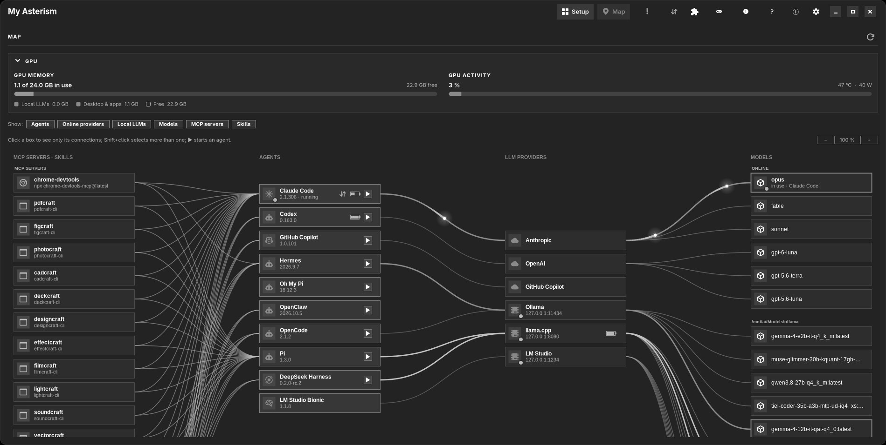
Główne okno: mapa na całą szerokość, nad nią karta GPU, w nagłówku ! otwartych problemów.
SKILL.md) i czasem skryptami, który uczy agenta
określonego zadania.Każda zmiana ustawień agenta jest najpierw pokazywana wiersz po wierszu, zanim cokolwiek zostanie zapisane. Stary plik zostaje jako kopia zapasowa, a pasek, który pojawia się po zmianie, ma Cofnij. Sama aplikacja nigdy nie działa z uprawnieniami administratora; tylko instalacja agenta dostarczanego jako pakiet systemowy prosi o hasło, w terminalu, który widzisz.
Zainstaluj AI Agents Map z Omarchy Plugin Marketplace albo w terminalu:
omarchy plugin add https://github.com/uBruckhaus/omarchy-ai-agents-map.git --enable
Na pasku pojawia się przycisk z robotem. Wszystko inne, czego potrzebuje, zapewnia standardowa
instalacja Omarchy, łącznie z podpisanymi dodatkami. Aby uruchamiać agentów w oknie, zainstaluj
VTE: sudo pacman -S vte4. Opcjonalnie: mise instaluje i aktualizuje
agentów.
Nowa instalacja otwiera się na stronie powitalnej: agenci i lokalne LLM zainstalowane na tym komputerze to już zaznaczone karty, a Włącz umieszcza je na mapie (zobacz Konfiguracja AI Agents Map). Po aktualizacji z wcześniejszej wersji wtyczki ustawienia zostają, a dodatki agentów i lokalnych LLM z tego komputera włączają się same, więc mapa pokazuje to, co pokazywała wcześniej.
Przycisk na pasku otwiera okno, wysuwa je na wierzch albo ukrywa, gdy już jest na wierzchu. Zamknięcie okna je ukrywa; program działa dalej w tle, więc otwiera się od razu. Ustawienia › W programie uruchamiającym dodaje wpis do programu uruchamiającego Omarchy.
Uwaga Gdy w oknie działa agent, zamknięcie najpierw pyta: Zatrzymaj i zamknij (wtedy zatrzymuje się też lokalny LLM agenta i zwalnia pamięć karty graficznej) albo Niech działa.
Gdy aplikacja przy pierwszym otwarciu sprawdza, co jest na tym komputerze, animowany przegląd pokazuje, co znajduje, rodzaj po rodzaju: agentów, lokalne LLM, serwery MCP i skille, każdy ze wskaźnikiem, który zmienia się w ✓ i liczbę, oraz ile z nich nie jest jeszcze połączonych. Po chwili znika sam; kliknięcie zamyka go od razu.
omarchy plugin remove ubruckhaus.ai-agents-map.
Przed usunięciem wyłącz Ustawienia › Uruchamiaj lokalne LLM razem z agentami, aby usunąć też strażnika działającego w tle, oraz Ustawienia › W programie uruchamiającym, aby usunąć wpis. Zmiany wprowadzone aplikacją zostają: ustawienia agentów, serwery MCP, skille i zainstalowane lokalne LLM. Najpierw odinstaluj lokalny LLM (prawy przycisk › Odinstaluj…), jeśli ma zniknąć. Aby usunąć też własny stan aplikacji:
rm -rf ~/.config/omarchy/ai-agents-map ~/.local/state/ai-agents-map \
~/.cache/ai-agents-map ~/.local/share/ai-agents-map/addons
Główne okno. Numery odpowiadają liście poniżej.
Mapa pokazuje to, co jest skonfigurowane — zainstalowanych agentów i lokalne LLM, serwery MCP i foldery skilli, których używają agenty, oraz modele — a także, wyblakłe, serwery MCP i foldery skilli znalezione na tym komputerze, których żaden agent jeszcze nie używa, gotowe do połączenia linią (zob. Znalezione na tym komputerze). Wszystko inne robi się w sekcji Konfiguracja (przycisk w nagłówku, obok Mapa), jedna karta na element, w sekcjach, które zwijają się kliknięciem w ich pasek:
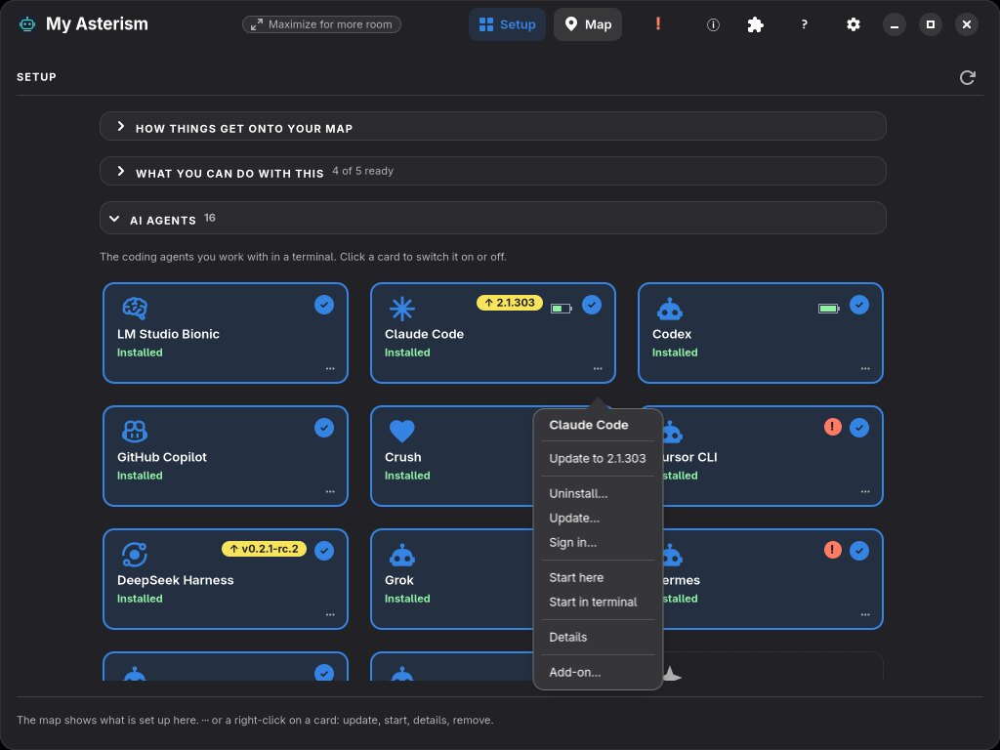
Konfiguracja: zainstalowani agenci mają niebieską ramkę, włączeni ✓, aktualizacje żółtą, a problemy czerwoną plakietkę; menu Claude Code.
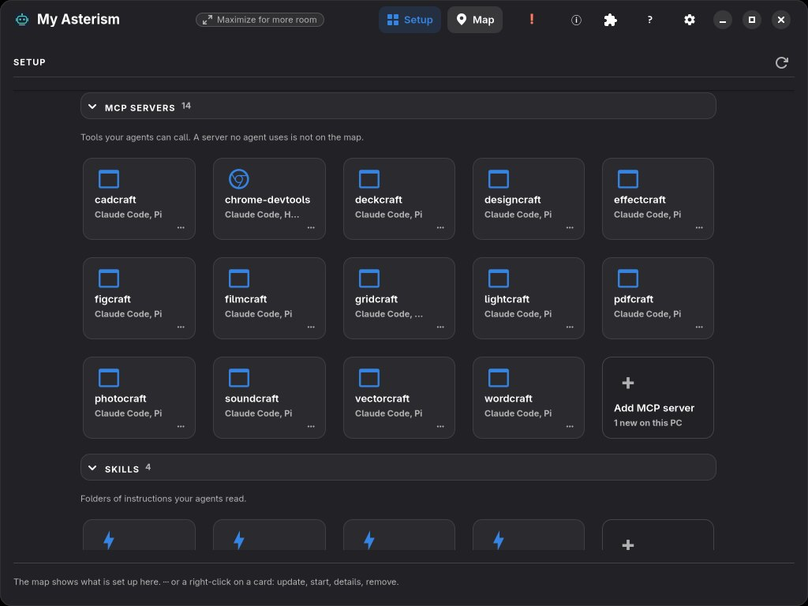
Serwery MCP i skille, każda sekcja z kartą do dodawania.
Nie ma nic do ukrywania: to, czego nie chcesz na mapie, wyłączasz lub usuwasz tutaj. Gdy instalacja lub logowanie działa w terminalu w oknie, Wstecz (lub × na jego karcie) wraca na stronę, z której je uruchomiono.
Lokalne serwery MCP i Serwery MCP online (osiągalne pod adresem internetowym) to dwie sekcje. Dodaj folder… w sekcjach Lokalne serwery MCP i Skille dodaje folder, w którym aplikacja również ich szuka — na przykład wspólny dysk z rozpakowanymi aplikacjami, które oferują serwer MCP, albo folder z własnymi skillami. Dodane foldery są wymienione obok przycisku; ✕ przy jednym kończy szukanie w nim (nic nie zostaje usunięte). To, co w nich zostanie znalezione, pojawia się wyblakłe na mapie, dopóki linia tego nie połączy: Konfiguracja ma karty tylko dla tego, co jest skonfigurowane.
Mapa pokazuje wszystko, co jest skonfigurowane. Przełączniki Pokaż pod kartą GPU oraz przyciski filtrów kolumn (MCP i skille, Agenci, Dostawcy, Modele) nad mapą pomijają całe obszary lub kolumny i są zapamiętywane.
Widok mapy zależy od części ekranu zajmowanej przez okno (lub od szerokości okna, gdy rozmiar ekranu nie jest znany): Mały (do 55 % ekranu lub poniżej 1150 pikseli) pokazuje Agenci i Dostawcy; Średni (do 80 % lub poniżej 1600 pikseli) dodaje Modele; a Maksymalny (powyżej 80 % lub od 1600 pikseli) pokazuje wszystkie cztery kolumny, w tym MCP i skille. Kolumnę pominiętą przez widok można mimo to włączyć jej przyciskiem nad mapą, a mapa ułoży się na nowo. W każdym widoku pokazywane kolumny są wyśrodkowane i dopasowują swoją szerokość (266 do 560 pikseli) oraz odstęp między kolumnami do wolnego miejsca.
Model agenta to łańcuch: jedna linia od agenta do jego dostawcy i jedna od dostawcy do używanego modelu. Modele, których nikt nie używa, pozostają polami bez linii, a filtr karty (tylko to, co połączone lub przypięte) je ukrywa. Przeciągnięcie lokalnego dostawcy na jeden z jego modeli to jeden krótki krok: dostawca używa tego modelu, a agent połączony później z dostawcą go otrzymuje. Gdy upuszczenie nie może zadziałać, krótka notka wyjaśnia dlaczego, np. z którym dostawcą trzeba najpierw połączyć agenta. Proste narysowane połączenie lub rozłączenie prosi o zastosowanie w małym oknie, a potem krótka notka to potwierdza, z opcją Cofnij; błąd mówi, co poszło nie tak. Zmiany wymagające dodatkowych kroków używają szczegółowego podglądu. Gdy jeden agent wywołuje drugiego, aktywna ścieżka wywołanego agenta i strzałka między nimi mają osobny kolor, także przy dalszych wywołaniach. Strzałka wskazuje używanego agenta; po zakończeniu pracy pozostaje przygaszona. Symbol drzewa na karcie agenta otwiera ostatnich podagentów; jest jasny podczas ich pracy i przygaszony, gdy pozostają tylko zakończeni.
Zapytaj AI może proponować te same zmiany na mapie, w tym zmianę istniejącego modelu, połączenie folderu umiejętności, naprawę błędnego połączenia oraz logowanie i wylogowanie agenta. Ten sam podgląd prosi o potwierdzenie przed zastosowaniem. Przy pytaniach o szybkość, pamięć GPU, kontekst, Vulkan lub ROCm otwiera Wydajność i opiera sugestie na sprzęcie i pomiarach tego komputera.
Pod pytaniem przewijana karta podpowiada prośby dotyczące serwerów MCP i umiejętności, agentów, dostawców oraz modeli. Wybranie przykładu wpisuje pytanie z kategorią na początku (na przykład Modele:) i przełącza na tę kategorię, ale niczego nie wysyła. Możesz zmienić pytanie lub samodzielnie wpisać kategorię. Dopiero Zapytaj je wysyła. Widok stanu nadal pokazuje ustalenia osobno dla każdej kategorii.
Te podpowiedzi można dopasować: zakładka w polu pytania zapisuje wpisany tekst jako nową podpowiedź wybranej kategorii (do 12 na kategorię), ołówek obok podpowiedzi edytuje ją na miejscu (Enter zapisuje, Esc anuluje, pusty tekst ją usuwa), jej × ją usuwa, a strzałka na końcu wiersza przywraca wbudowane podpowiedzi.
pi -p … lub codex exec … — wzdłuż lewej strony karty agentów biegnie strzałka od agenta, który
używa drugiego, do używanego, a po niej biegnie światło; jej podpowiedź wymienia obu. Agent może używać kilku innych
naraz, każdego z własną strzałką. Dopóki jest używany, używany agent ma też swoje linie do dostawcy i dalej do modelu
w kolorze strzałki, a światło biegnie po nich w tym kolorze: od razu widać, który dostawca i model pracuje dla kogo.Wskazówka W wąskim oknie (do 55 % ekranu lub poniżej 1150 pikseli) mapa pokazuje kolumny Agenci i Dostawcy; poszerz okno lub włącz Modele oraz MCP i skille przyciskami nad mapą.
Pasek Zapytaj AI… każdej kolumny pokazuje po lewej jej stan, a nagłówek pokazuje najgorszy stan wszystkich kolumn, także ukrytej: zielony znacznik, gdy wszystko jest w porządku, żółty trójkąt przy wskazówkach, aktualizacjach lub sugestiach, czerwony !, gdy coś trzeba naprawić. Kliknięcie symbolu otwiera listę kolumny, najpoważniejsze najpierw: niezalogowany agent, lokalny LLM bez modeli, niedziałające połączenie, mało miejsca na modele, każde z przyciskiem prowadzącym tam, gdzie można to naprawić. Zapytaj AI przy wierszu wstawia go do pytania; dopiero Pytaj je wysyła. Kliknięcie symbolu w nagłówku prowadzi do pierwszej kolumny, której to dotyczy. Sprawdzanie tylko odczytuje; niczego nie zmienia, nie uruchamia ani nie wysyła.
Lista pokazuje też nowe programy lub skille znalezione na tym komputerze, to, co jest na tym komputerze, ale nie na mapie, oraz aktualizacje zainstalowanych agentów, lokalnych LLM i serwerów MCP, każde ze swoim przyciskiem. Aktualizacje są sprawdzane w tle przy otwarciu okna, najwyżej co sześć godzin. Aktualizacja zaczyna się dopiero po kliknięciu Aktualizuj (zobacz Znalezione aktualizacje). Do czego nadaje się twoja konfiguracja, jest na stronie powitalnej i w Pomocy, w Co możesz z tym zrobić.
Na górze każdej kolumny mapy znajduje się zwinięty pasek Zapytaj AI… z symbolem stanu po lewej stronie: zielonym znacznikiem, gdy wszystko jest w porządku, żółtym trójkątem dla wskazówek, aktualizacji lub propozycji, albo czerwonym !, gdy w tej kolumnie jest coś do naprawy. Pasek nagłówka pokazuje ogólny stan wszystkich czterech kolumn (także ukrytych) i otwiera pierwszą kolumnę wymagającą uwagi. Kliknięcie symbolu stanu kolumny otwiera jej listę stanu: każdy punkt do naprawy dla tej kolumny z przyciskiem otwierającym miejsce naprawy oraz Zapytaj AI do wstępnego wypełnienia zapytania, nowsze wersje zainstalowanych agentów i lokalnych LLM (Aktualizuj uruchamia mise upgrade albo własny aktualizator agenta w terminalu lub otwiera podgląd instalacji; sprawdzane najwyżej co sześć godzin), aktualizacje serwerów MCP z codziennych kontroli AI oraz Sprawdź ponownie. Na stronie powitalnej Co możesz z tym zrobić pokazuje zastosowania (codzienna pomoc, vibe coding, obrazy, głos, research i pisanie) jako Gotowe, Prawie lub Jeszcze nie, z tym, co jest do każdego, i następnym krokiem.
Przy starcie aplikacja czyta w tle podpisany katalog dodatków: z pamięci podręcznej, a online tylko wtedy, gdy włączone jest Szukaj dodatków online. Lista stanu każdej kolumny pokazuje wtedy także agentów i lokalne LLM na tym PC, których dodatek jest wyłączony lub jeszcze niezainstalowany (Pobierz dodatki lub Dodatki otwiera dodatki do włączenia lub pobrania), nowe programy lub skille znalezione na tym PC (Dodaj serwer MCP…, Dodaj skille…) oraz zainstalowane dodatki z nowszą wersją w katalogu. Zaktualizuj wszystko pokazuje je z wersjami i po potwierdzeniu aktualizuje jeden po drugim, każdy sprawdzony z katalogiem; jeden komunikat mówi, co zaktualizowano, a czego nie.
Kliknięcie części Zapytaj AI… paska otwiera pytanie w wyśrodkowanym oknie nad mapą, z pomocnikiem i jego kosztem w nagłówku oraz przyciskami w stopce (albo oferuje Zacznij, gdy żaden pomocnik AI nie jest jeszcze skonfigurowany). Zanim cokolwiek zostanie wysłane, karta pokazuje, który pomocnik odpowiada (z menu, jeśli gotowych jest więcej) oraz czy działa lokalnie (Lokalnie, bez tokenów), czy Używa planu/tokenów; dopiero kliknięcie Zapytaj wysyła zapytanie. Pomocnik zadaje jedno pytanie doprecyzowujące, proponuje przeniesienie zapytania do właściwej kolumny albo wskazuje sprawdzonych kandydatów z rzeczywistych wyników wyszukiwania. W kolumnie Modele karta pokazuje VRAM, RAM i wolne miejsce na tym PC oraz oznacza każdego kandydata jako Mieści się w VRAM, Używa odciążenia RAM lub Za duży dla tego PC. Sprawdź otwiera podgląd pobierania przed pobraniem lub zmianą czegokolwiek, a gdy model jest gotowy, możesz opcjonalnie połączyć go z agentem przez podgląd połączenia z opcją Cofnij.
W kolumnie Serwery MCP i skille pomocnik może dodać serwer MCP z oficjalnego rejestru, połączyć serwer z agentem lub go odłączyć. Może też odłączyć kilka lub wszystkie serwery w jednym kroku, z jednym podglądem i jednym Cofnij. Wybierasz agentów, wypełniasz to, czego serwer potrzebuje (klucze zostają na tym komputerze i nigdy nie trafiają do pomocnika), i zatwierdzasz zwykły przegląd; wtedy zmiana jest wykonywana, a mapa ją pokazuje. Wszystko inne odrzuca i wskazuje właściwą kolumnę. W tym samym kroku może też odłączyć foldery skilli. Nie potrafi jeszcze dodawać ani aktualizować skilli, aktualizować programów ani usuwać serwera z komputera.
W kolumnie Modele pomocnik może też usunąć model lokalnego LLM: najpierw widzisz zwykły przegląd, a pliki trafiają do Kosza, gdy to możliwe. Może też przenieść folder modeli na inny dysk, z podglądem i Cofnij w nagłówku. Każdy folder ma własny przegląd. Może też odłączyć agentów od jednego, kilku lub wszystkich modeli lokalnego LLM, z jednym podglądem i jednym Cofnij; żaden plik nie jest usuwany.
W kolumnie Agenci pomocnik może zainstalować, zaktualizować lub usunąć agenta, jeśli strona Agenci to oferuje. Widzisz zwykły przegląd; krok działa potem w terminalu, który możesz obserwować. Nie uruchamia agentów ani nie zmienia ich ustawień.
W kolumnie Dostawcy pomocnik może zainstalować lub zaktualizować lokalny LLM oraz go uruchomić lub zatrzymać, jeśli aplikacja to oferuje; otwiera się zwykły przegląd aplikacji. Nie może odinstalować dostawcy ani zalogować się do dostawcy online.
Zapytaj AI oferuje też pozostałe kroki menu aplikacji, każdy przez to samo menu z własnym przeglądem i Cofnij. W kolumnie Agenci: pytanie testowe, karta klucza API (klucz wpisujesz tam; pomocnik nigdy go nie widzi), ustawienia bezpieczeństwa, uruchomienie agenta lub zatrzymanie takiego, który działa poza aplikacją, jego połączenia i szczegóły, a dla dodatku jego szczegóły, włączenie lub wyłączenie, instalacja, aktualizacja lub usunięcie. W kolumnie Dostawcy: te same kroki dodatków dla lokalnych LLM oraz Znajdź istniejącą AI, które szuka programów i folderów modeli już obecnych na tym komputerze; aplikacja sama nie odinstalowuje programu lokalnego LLM. W kolumnie Modele: załadowanie, zwolnienie lub import modelu oraz model, którego lokalny LLM używa sam, sprawdzany tymi samymi regułami co zmiana modelu i z własnym Cofnij, tak jak gdy rysujesz go na mapie. W kolumnie Serwery MCP i umiejętności: to, co pokazuje Znalezione na tym komputerze. Połączenie agenta z dostawcą online loguje go u jego własnego dostawcy; dostawca innego agenta jest odrzucany z podaniem powodu. Gdy agenci opuszczają lokalny LLM, zmienia się tylko ich konfiguracja, tak jak gdy usuwasz linię. Po pobraniu Zapytaj AI proponuje agentów, którzy mogą używać lokalnego LLM, a model staje się modelem tego agenta, tak jak gdy rysujesz połączenie.
Gdy kolumna czegoś nie potrafi, ale sieć może to wyjaśnić, pomocnik online szuka w sieci, a karta pokazuje jego odpowiedź ze źródłami; lokalny pomocnik nie potrafi szukać w sieci i to mówi. Po takiej odpowiedzi Zrób to z … pokazuje polecenie, a agent pracuje w terminalu i pyta przed każdym krokiem zmieniającym pliki. Samo zadanie czeka w prywatnym pliku w pamięci podręcznej AI Agents Map; wiersz poleceń agenta podaje tylko ten plik, więc inne konta na tym komputerze nie mogą go odczytać.
Każdy agent programistyczny ma kartę w Konfiguracji, zainstalowani z wersją. Kliknij kartę zainstalowanego agenta (⋯ › Szczegóły) albo prawym przyciskiem jego pole na mapie › Szczegóły. Na górze wiersz mówi, czy agent jest gotowy (a jeśli nie, dlaczego) i czy teraz działa, lub kiedy był ostatnio używany. Poniżej każda część jest zwijaną kartą: kliknięcie nagłówka ją otwiera lub zamyka. Zaczynają zwinięte, każda z jednowierszowym podsumowaniem i plakietkami; część, którą otworzysz, pozostaje otwarta na kolejnych stronach szczegółów.
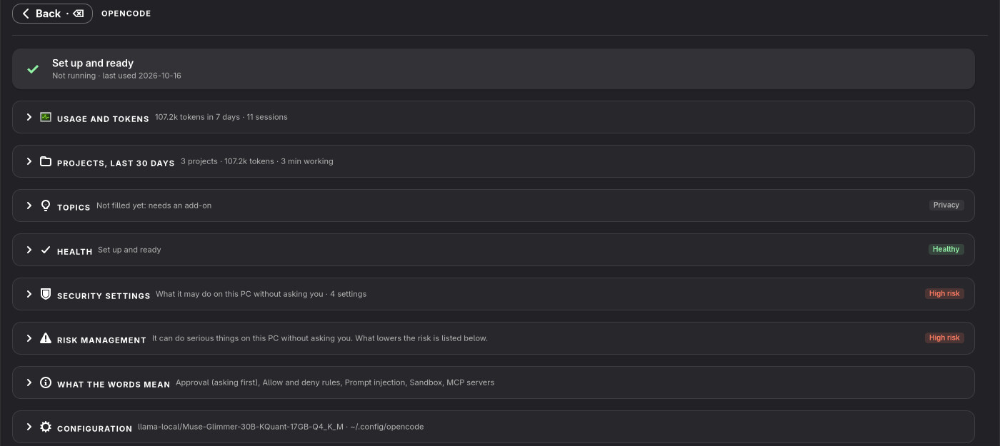
Szczegóły agenta: każda część zwinięta, z podsumowaniem i plakietkami.
| Karta | Co pokazuje |
|---|---|
| Użycie i tokeny | To, co agent zapisuje: tokeny i sesje z dziś i z ostatnich siedmiu dni, plan, wykres tokenów na dzień, limity z czasem resetu i tokeny według modelu. |
| Koszt API / Wartość API | Ile kosztują jego tokeny w cenach API dostawców: dziś, w ostatnich 7 i 30 dniach oraz dla każdego modelu podział na wejście, wyjście, odczyt i zapis pamięci podręcznej (tokeny i kwota). Koszt API dla agenta płatnego za token (z jego udziałem w dziennym limicie), Wartość API dla agenta z planem (plan to pokrywa). Zobacz Koszt API. |
| Projekty, ostatnie 30 dni | Dla każdego folderu projektu: czas pracy, sesje, tokeny, uruchomienia subagentów, zmienione wiersze i wartość API. |
| Tematy (Prywatność) | O czym były sesje. To wykracza poza liczby, dlatego karta ma oznaczenie Prywatność i wypełnia ją tylko dodatek (zob. niżej); dodatek nazywa kartę, a jej plakietka mówi, ile czyta. |
| Stan | Każde sprawdzenie konfiguracji z ✓ albo co zrobić dalej: zalogować się, zainstalować lub uruchomić lokalny LLM, pobrać model, dodać serwery MCP lub skille. |
| Ustawienia bezpieczeństwa, Zarządzanie ryzykiem, Co znaczą te słowa | Co agent może zrobić bez pytania i co zmniejsza ryzyko (zob. Kontrola stanu i bezpieczeństwa). |
| Konfiguracja | Ustawienia agenta, serwery MCP, skille i jego folder ustawień. |
Projekty są pokazywane dla Claude Code, Codex, Pi, Oh My Pi, OpenCode, Hermes, DeepSeek Harness, Goose, Gemini CLI i OpenClaw: czas pracy, sesje, tokeny, uruchomienia subagentów, zmienione wiersze i ile kosztowałyby tokeny w cenach API. Liczby pochodzą z własnych plików sesji lub bazy danych każdego agenta; żaden tekst nie jest czytany.
Koszt API. Kwoty są szacunkiem: liczby tokenów prowadzone przez agenta (wejście, wyjście, odczyt i zapis pamięci podręcznej, dla każdego modelu) w opublikowanych cenach API dostawców — Anthropic, OpenAI, DeepSeek, xAI i Google, z datą ich pobrania. Sesja liczy się w dniu ostatniej odpowiedzi; modele lokalne nic nie kosztują. Crush nie prowadzi sumowalnych liczników tokenów, więc jego karta pokazuje koszt podany przez sam Crush. Dla agenta, który nie prowadzi na PC liczników tokenów (Cursor CLI, Antigravity, Muse), karta mówi, że koszt jest nieznany; ma go strona konta jego dostawcy. Kwoty są w dolarach amerykańskich albo w euro po dziennym kursie referencyjnym Europejskiego Banku Centralnego (Ustawienia › Koszty).
Z dodatkiem Insights (zob. Dodatki) karta Tematy pokazuje najpierw, które tematy zużyły najwięcej tokenów w ostatnich 30 dniach (Najwięcej tokenów: sesje o tym samym tytule to jeden temat, każdy z udziałem we wszystkich tokenach), potem tytuły, które agent sam nadał swoim sesjom, według projektu (Według projektu), i oferuje Podsumuj z Claude… (gdy Claude Code jest zainstalowany). Jej tokeny pochodzą z własnych plików sesji agenta bez odczytów z pamięci podręcznej, więc mogą być dużo niższe niż w Użycie i tokeny, które może liczyć odczyty z pamięci podręcznej. Zanim cokolwiek zostanie wysłane, widzisz dokładnie, co zostanie wysłane: tytuły i liczby, nigdy rozmowy.
Dla każdego agenta zachowywanych jest 50 ostatnich folderów projektów.
Podmenu Uruchom każdego agenta ma trzy sekcje oddzielone liniami: Uruchom z bieżącym folderem, Wybierz folder… oraz listę rozwijaną z wyszukiwaniem Ostatnie projekty. Przewijana lista zawiera wszystkie foldery użyte do uruchomienia tego agenta z mapy, od najnowszych. Wybierz poprzedni projekt, a potem Uruchom. Okno wyboru folderu uruchamia jedną sesję w wybranym folderze. Przypięty folder nie jest wymagany: bez niego Uruchom używa Ustawienia › Agenci uruchamiają się w lub folderu domowego. Strona szczegółów ma przewijaną kartę Ostatnie projekty ze wszystkimi zapisanymi folderami. Kliknięcie wiersza otwiera Uruchom z tym folderem. Pinezka ustawia następny folder domyślny tego agenta; można przypiąć jeden folder na agenta. Odpięcie przywraca ogólny domyślny folder. Kosz usuwa wpis i pinezkę z historii tego agenta, nigdy folder ani jego pliki. To samo podmenu, historia i pinezki dotyczą Uruchom tutaj i Uruchom w terminalu. Uruchom ponownie znów otwiera podmenu. Działające sesje zachowują folder; anulowane wybory i nieudane uruchomienia nie dodają historii.
vte4).claude -p … uruchomione przez skrypt lub innego agenta. Kliknięcie
instancji w tle otwiera kartę terminala, która pokazuje na bieżąco, co ona pisze: pytania, odpowiedzi i
używane narzędzia (z jej pliku sesji albo z jej wyjścia, gdy trafia ono do pliku). Karta kończy się wraz z
instancją. To jedyne miejsce, w którym aplikacja pokazuje tekst rozmowy, i tylko dla klikniętej instancji.Gdy agenci mają terminale w oknie, rząd kart nad mapą pokazuje jedną kartę na terminal, z kropką oznaczającą pracuje, działa lub zakończony. Kliknięcie karty pokazuje ten terminal; × zamyka zakończony.
Agent otwarty gdziekolwiek na komputerze dostaje zieloną kropkę i działa, a pole modelu, z którym działa, mówi w użyciu · <agent>.
Pole i karta działającego agenta pokazują, co odbiera i wysyła (↓ do, ↑ z). Kliknij ten wiersz albo ⇅ w nagłówku dla wszystkich działających agentów, aby otworzyć jego stronę sieci: Teraz, Ostatnie 5 minut jako wykres (przychodzące zielone, wychodzące niebieskie), Dokąd idzie — API online, lokalne LLM, ten komputer i twoja sieć lokalna, każde ze swoim udziałem — oraz Programy: sam agent i programy przez niego uruchomione, np. jego serwery MCP. Liczone jest z własnych połączeń TCP agenta, gdy aplikacja jest otwarta (bez uprawnień administratora; UDP nie jest liczone), i zostaje na tym komputerze.
Claude Code i OpenCode mogą przekazywać części zadania podagentom. Dopóki któryś z podagentów agenta pracuje, jego pole na mapie pokazuje obok ⇅ mały znak drzewa; gdy na liście są tylko zakończeni, znak jest przygaszony. Kliknięcie go otwiera stronę Podagenci agenta: osobną mapę ułożoną jak duża, z kartą agenta po lewej i kartą Podagenci po prawej. Każde pole pokazuje zadanie podagenta, jego typ, folder, w którym pracuje jego sesja, oraz pracuje albo zakończony … minut temu. Po liniach do pracujących biegnie światło; zakończeni są przygaszeni. Najedź na pole, aby przeczytać całe zadanie.
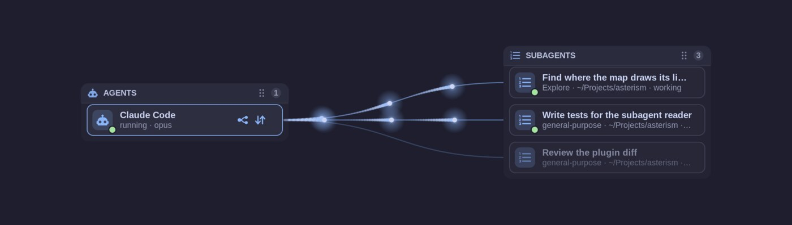
Podagenci agenta: dwóch przy pracy, jeden zakończony.
Jak długo zakończeni podagenci zostają na liście (30 minut) i ilu najwyżej (10), ustawia się w Ustawienia › Podagenci; pracujący są zawsze pokazywani. Strona czyta tylko typ każdego podagenta i jednowierszowy opis jego zadania, z własnych plików agenta (folderów sesji Claude Code, bazy danych OpenCode), nigdy tego, co mówią podagenci.
Agent, który uruchomił innego i go używa — na przykład Claude Code wykonujący pi -p … przez swoją powłokę — jest z nim połączony na mapie linią wygiętą wzdłuż prawej strony pól agentów. Światło płynie po niej, dopóki któryś z nich pracuje. Rozpoznaje się to tylko z drzewa procesów (własnych procesów agentów i ich rodziców), a linia jest pokazywana, nigdy edytowana. Subagenci Claude Code, Codex, GitHub Copilot, OpenCode i Goose są odczytywani jak w aplikacji.
Szczegóły agenta pokazują, ile kosztują jego tokeny po cenach API dostawców: dziś, w ostatnich 7 i 30 dniach oraz dla każdego modelu z podziałem na wejście, wyjście, odczyt cache i zapis cache. Koszt API dla agenta płacącego za tokeny (z udziałem w dziennym limicie), Wartość API dla agenta z planem (który to pokrywa). To szacunek z liczb w jego własnych plikach sesji; żaden tekst z nich nie jest czytany. Ustawienia › Koszty ustala Walutę (euro po dziennym kursie referencyjnym Europejskiego Banku Centralnego, pobieranym raz dziennie), Dzienny limit oraz progi Żółty od i Czerwony od (czerwony zawsze powyżej żółtego). Pliki sesji Claude Code są czytane dalej od miejsca, w którym skończyło się ostatnie spojrzenie, więc nawet bardzo długie sesje liczą się w całości; pierwsze spojrzenie na komputerze z bardzo wieloma z nich może wymagać dwóch, by było pełne.
Na mapie agent z limitami planu pokazuje w swoim polu małą baterię z tym, co zostało z najciaśniejszego limitu, a agent płacący za tokeny pokazuje tam dzisiejszy koszt, a obok baterię z tym, co zostało z dziennego limitu; zielony, żółty lub czerwony według progów z Ustawienia › Koszty, szczegóły w podpowiedzi. Oba są sprawdzane co minutę. Bateria, której liczby mogą być nieaktualne (kolektor zachował je po nieudanym sprawdzeniu albo zmierzono je ponad 30 minut temu), jest wyblakła, a jej podpowiedź mówi, kiedy je zmierzono; limit bez czasu odnowienia nie jest wtedy już pokazywany. Limity pochodzą z kolektora użycia Omarchy dla tego agenta (omarchy-agent-usage-claude, -codex, …): na Omarchy przez samo Omarchy, na innym pulpicie, gdy kolektor jest w twoim PATH. Bez kolektora pytany jest sam Codex, dopóki jest zalogowany: jego własny codex app-server podaje limity jego planu (nie jest wysyłany żaden prompt, a zaraz potem zostaje zamknięty). Pytany jest tylko zainstalowany Codex, nigdy program startowy, który najpierw by go zainstalował lub zaktualizował; liczy się też logowanie w pęku kluczy lub w folderze wskazanym przez CODEX_HOME. Dopóki aplikacja jest otwarta, o limity pyta się ponownie co dziesięć minut; po wylogowaniu nie są już pokazywane. AI Agents Map sama nie czyta plików logowania; robi to kolektor albo agent. Agent, którego własne dane sesji mówią, ile kosztowały jego sesje (Hermes, OpenCode), liczy się jako płacący za tokeny; sam szacowany koszt się nie liczy. Gdy Powiadom przy czerwonym jest włączone, koszt na czerwono dostaje jedno powiadomienie na pulpicie dziennie.
Szczegóły agenta pokazują też Projekty, ostatnie 30 dni: dla każdego folderu projektu czas pracy, sesje, tokeny, zmienione wiersze i wartość API, uruchomienia subagentów według typu i najbardziej aktywną godzinę, z liczb w jego plikach sesji. Karta lokalnego LLM mówi, czy działa, ile pamięci GPU zajmuje i które modele są załadowane, pokazuje jego modele, agentów i adres, Użycie i tokeny, które agenci przez niego wysłali (dopasowane po nazwie modelu), a w Zarządzanie ryzykiem, kto może się do niego dostać. Na mapie działający lokalny LLM pokazuje wciąż wolną pamięć GPU jako baterię. Kliknięcie pola serwera MCP lub zestawu skilli otwiera jego szczegóły: którzy agenci go mają i jak każdy go uruchamia, wywołuje lub czyta (wartości kluczy, tokenów i parametrów zapytania nigdy nie są pokazywane), kto go jeszcze nie ma, oraz narzędzia serwera z ostatniego zapytania lub opis każdego skilla.
Terminale otwierają się w wyśrodkowanym oknie nad mapą. Dopóki agenci działają w terminalach okna, nad mapą jest karta dla każdego, z kropką oznaczającą pracuje, działa lub zakończony; kliknięcie pokazuje terminal, a widoczny jest zaznaczony (Ustawienia: Karty terminali nad mapą). Pole pracującego agenta na mapie pokazuje Pole statystyk użycia: jak szybko przyszła jego ostatnia odpowiedź (tokeny na sekundę), rozmiar jego kontekstu i ile z niego jest zajęte (żółty od 75 %, czerwony powyżej 90 %), odczytane z jego własnych plików sesji, tylko liczby; Ustawienia mówią, co jest widoczne i w jakim rozmiarze. W Twój pierwszy agent trasa z lokalnym LLM proponuje model startowy pasujący do twojej karty graficznej (Model), a Pobierz go uruchamia jego pobieranie jak strona modeli.
Prawy klik na agencie lub lokalnym LLM › Konfiguruj… otwiera jego własną konfigurację w karcie terminala w
oknie, dla tego, czego aplikacja nie ustawia sama — na przykład hermes setup albo własne menu Ollamy;
LM Studio otwiera swoje okno. Program bez polecenia konfiguracji pokazuje swoje --help. Gdy się skończy,
mapa sprawdza ponownie i pokazuje, co się zmieniło, a działającemu lokalnemu LLM proponuje restart.
Zaloguj… w menu agenta (w Konfiguracji lub na mapie) pokazuje, czego agent potrzebuje, i jego własne sposoby logowania:
claude auth login lub codex login). Twoje hasło lub logowanie w przeglądarce pozostaje
między tobą a agentem; aplikacja nigdy go nie widzi. Gdy agent o to prosi, terminal mówi, co wpisać (Pi i Copilot:
/login).~/.gemini/.env,
czytelny tylko dla ciebie). Nigdy nie trafia do wiersza poleceń, logu ani ustawień aplikacji, a aplikacja go nie
przechowuje. Rozliczanie API w Claude Code to jego własne logowanie do Anthropic Console, więc żaden klucz nie
przechodzi przez aplikację.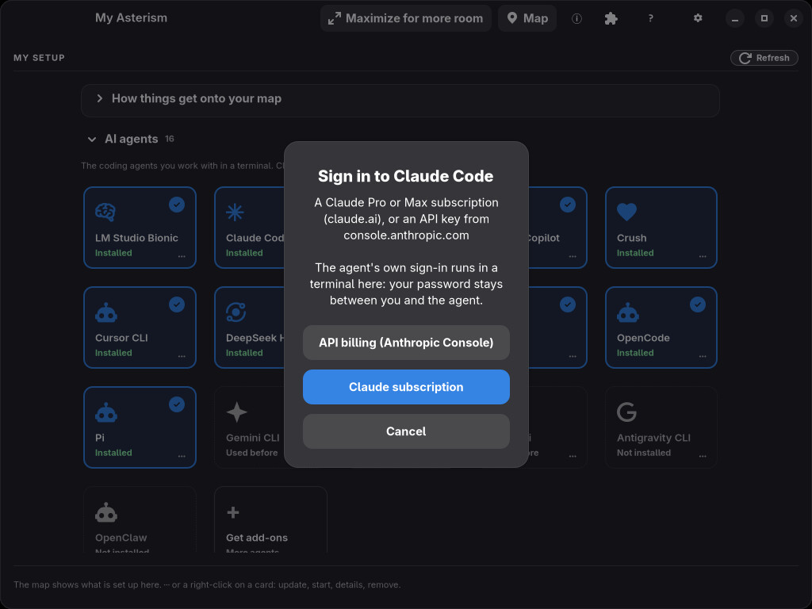
Logowanie do Claude Code: subskrypcja lub rozliczanie API, oba przez własne logowanie Claude Code.
Potem mapa pokazuje dostawcę online agenta i jego modele.
Agent, który czyta klucz API, pokazuje w szczegółach Klucz API…. Karta mówi, dokąd trafi klucz, zanim go wpiszesz: do własnego polecenia agenta (Codex: codex login --with-api-key) albo do pliku, który czyta agent (Gemini: ~/.gemini/.env, zapisany jako nowy plik czytelny tylko dla ciebie; pozostałe wiersze w nim zostają). Pole ukrywa to, co wpisujesz, a Zapisz staje się dostępne dopiero dla czegoś, co wygląda jak klucz. Klucz trafia do osobnego procesu roboczego przez jego standardowe wejście; nigdy nie trafia do wiersza poleceń, dziennika, kopii zapasowej ani ustawień aplikacji, a aplikacja go nie przechowuje. Gdy odpowie własne polecenie agenta, pokazany zostaje jego ostatni wiersz, bez klucza.
Gdy jest nowsza wersja zainstalowanego agenta, jego karta w Konfiguracji dostaje żółte
↑ wersja, a stan kolumny o niej wspomina. Aktualizuj
uruchamia aktualizację w taki sposób, w jaki agent został zainstalowany — na przykład
mise upgrade <narzędzie> lub claude update — we własnym oknie terminala, abyś
mógł ją śledzić.
Czterech agentów można zainstalować, aktualizować i odinstalować z mapy (prawy klik na agencie › Zainstaluj…):
goose, od Agentic AI Foundation, wcześniej Block), jego wydanie z GitHuba przez
mise. Działa z wieloma dostawcami i z lokalnymi LLM; Konfiguruj… uruchamia
goose configure.dsh, wersja zapoznawcza dla deweloperów), z npm. Może korzystać z lokalnych LLM.agy, Google), z manifestu wydań Google; pobrany plik jest sprawdzany jego
sumą SHA-512.Gdy pojawi się agent, którego aplikacja jeszcze nie zna, prosi raz zainstalowanego agenta (Claude Code, w przeciwnym razie Codex), aby sprawdził w sieci, gdzie ten agent trzyma swoje skille i serwery MCP. Odpowiedź jest sprawdzana przed użyciem i nic z niej nie jest nigdy wykonywane. Ustawienia › Sprawdzaj nowe agenty wyłącza to.
Lokalne środowisko LLM uruchamia modele językowe na twojej własnej karcie graficznej, więc zapytania nigdy nie opuszczają komputera. Aplikacja instaluje je, uruchamia i zatrzymuje za ciebie.
Prawy klik na szarym (niezainstalowanym) lokalnym LLM na mapie › Zainstaluj…. Wybierasz folder programu, folder modeli (proponowany jest ten, którego używają twoje inne lokalne LLM) i czy ma startować przy logowaniu. Jest instalowany tylko dla twojego użytkownika, z usługą użytkownika, więc hasło nie jest potrzebne. Każdy pobrany plik musi pasować do sumy SHA-256 opublikowanej przez jego wydanie, zanim zostanie rozpakowany lub uruchomiony.
| Środowisko | Uwagi |
|---|---|
| Ollama | Oficjalne wydanie (z ROCm dla kart AMD). |
| llama.cpp | Wybrana kompilacja (Vulkan, ROCm, CUDA, CPU), jako router modeli: dowolny GGUF w folderze modeli, jeden załadowany naraz. |
| LM Studio | Nie jest instalowany stąd (brak opublikowanej sumy kontrolnej); pobierz go z lmstudio.ai. Po zainstalowaniu jest pokazywany i zarządzany. |
| vLLM | Dla kart NVIDIA, we własnym środowisku Pythona. |
| Jan | Jego AppImage, rozpakowany, z silnikiem Jana jako usługą w tle dla agentów. |
| KoboldCpp | Oficjalna kompilacja w jednym pliku, jako router modeli. |
| Strata | Jego własny instalator (install.sh z najnowszego wydania, sprawdzony z SHA-256 podanym przez wydanie), który umieszcza terminal Strata w ~/.local/share/strata/terminal. Silnik i modele przychodzą później, na własnych ekranach Strata (zobacz Strata). AI Agents Map nie oferuje dla niego Odinstaluj…; jak go usunąć, opisuje ta sama sekcja. |
Tak zainstalowany lokalny LLM oferuje też Zaktualizuj… (poprzednia wersja zostaje jako zapas), Folder modeli… i Odinstaluj…, które usuwa program, polecenie, usługę i ustawienia, ale nigdy modele. Lokalne LLM zainstalowane przez ciebie samodzielnie są pokazywane, ale nigdy nie są zmieniane.
Lokalny LLM, który nie jest jeszcze zainstalowany, pokazuje Zainstaluj w Dostawcy i modele, a przewodnik pierwszego agenta oferuje Zainstaluj mise, Zainstaluj Node.js i Zainstaluj dla lokalnego LLM, którego potrzebuje jego ścieżka. AI Agents Map najpierw wyszukuje najnowsze wydanie i pokazuje je na karcie: jego pliki i ich rozmiar, folder programu (~/.local/share/ai-agents-map/<nazwa>, jeden folder na wersję), folder modeli w nim i twoją kartę graficzną. Dla llama.cpp i KoboldCpp wybierz tam wariant (Vulkan, ROCm, CUDA lub CPU); inny wariant jest ponownie wyszukiwany, zanim cokolwiek zostanie zainstalowane. Lokalny LLM z usługą użytkownika oferuje też Uruchom teraz i Uruchamiaj po zalogowaniu.
Zainstaluj pobiera pliki, sprawdza każdy z sumą kontrolną podaną w jego wydaniu i rozpakowuje je; podczas instalacji nic z pobranych plików nie jest uruchamiane (AppImage Jana rozpakowuje się sam w zamkniętej piaskownicy). Wyjątkiem jest Strata: jej własny install.sh, sprawdzony sumą kontrolną jej wydania, jest uruchamiany i instaluje ją w twoim folderze domowym. Program już zainstalowany w inny sposób, istniejący plik ustawień ani istniejąca usługa nigdy nie są zastępowane: karta tego odmawia. Ollama, llama.cpp, KoboldCpp, Jan, Strata i mise instalują się w ten sposób; LM Studio i vLLM nie, bo nie ma dla nich wydania z sumą kontrolną.
Każdy krok uruchomiony z przewodnika pierwszego agenta — instalacja, logowanie, pytanie testowe, Dostawcy i modele, Połączenia — wraca przyciskiem Wstecz do przewodnika, odświeżonego, tak że właśnie wykonany krok jest oznaczony jako wykonany.
Połącz raz agenta z lokalnym LLM, a potem po prostu uruchamiaj agenta — także przy zamkniętej aplikacji lub po restarcie. Jego lokalny LLM startuje razem z nim, a gdy zakończy się ostatni agent, który go używa, LLM zatrzymuje się około pięciu sekund później, więc jego pamięć graficzna znów jest wolna.
Zajmuje się tym mała usługa w tle, ai-agents-map-providers.service. Jest konfigurowana przy pierwszym
połączeniu z lokalnym LLM i usuwana, gdy zniknie ostatnie, lub gdy wyłączysz Ustawienia ›
Uruchamiaj lokalne LLM razem z agentami.
Uwaga KoboldCpp potrzebuje kilku sekund na start, dłużej niż czekają niektórzy agenci. Dlatego startuje przy logowaniu, a gdy zakończy się ostatni agent, tylko jego model jest zwalniany.
Uwaga Strata nie startuje razem ze swoimi agentami. Uruchom go na mapie (przycisk ▶ na jego polu) albo w samym Strata, zanim zaczniesz pracę z połączonym z nim agentem.
Strata to lokalny silnik inferencji z własną aplikacją terminalową. Udostępnia jeden model naraz na 127.0.0.1:8080 i obsługuje API OpenAI i Anthropic, więc agenci łączą się z nim tak jak z innymi lokalnymi LLM. AI Agents Map znajduje go po jego własnym poleceniu strata (inny program o tej nazwie, np. menedżer plików Strata w /usr/bin, nie jest za niego brany), po działającym serwerze i po jego modelach: konfiguracjach uruchomienia, które Strata trzyma w ~/.local/share/strata/install.
Wybór, pobranie i dostrojenie modelu odbywa się na własnych ekranach Strata: uruchom ~/.local/bin/strata launch w terminalu (~/.local/bin/strata launch --status pokazuje, co jest udostępniane). Gdy Strata raz uruchomi tak model, zapamiętuje go jako preset uruchomienia. Od tej pory Uruchom na mapie (przycisk ▶ na polu Strata) uruchamia ostatnio użyty preset (strata launch --preset … --no-tui, które wraca, gdy model jest udostępniany; duże modele potrzebują kilku minut), a Zatrzymaj go zatrzymuje (strata launch --stop).
Strata i llama.cpp domyślnie używają portu 8080. Agent połączony z mapy nazywa swój lokalny LLM (strata-local), więc pozostaje przy Strata, nawet gdy llama.cpp też używa tego portu; na jednym porcie może naraz udostępniać tylko jeden z nich.
AI Agents Map nie usuwa Strata. Aby usunąć go samodzielnie, skasuj jego terminal (~/.local/share/strata/terminal) i dowiązanie ~/.local/bin/strata. Jego silniki i konfiguracje uruchomienia są w ~/.local/share/strata (components, install), modele w folderach wybranych w Strata, a czaty aplikacji desktopowej w ~/.strata; usuń je tylko wtedy, gdy nie są już potrzebne.
Kliknij kartę lokalnego LLM w Konfiguracji albo prawym przyciskiem jego pole na mapie › Szczegóły. Pod kafelkami (modele, agenci, adres) znajdują się te same zwijane karty co u agentów: Użycie i tokeny — co twoi agenci przez niego wysłali w ostatnich dniach, według agenta i modelu, z własnych liczb sesji agentów i dopasowane po nazwie modelu —, potem Stan, Zarządzanie ryzykiem, Co znaczą te słowa i Konfiguracja.
Lokalny LLM, którego ustawienia aplikacja zna (llama.cpp, Ollama zainstalowana przez aplikację), ma na swojej stronie szczegółów kartę Wydajność:
W Ollama ustawienia dotyczą wszystkich modeli naraz (plik środowiska jej serwera).
Lokalny LLM z ustawieniami, które aplikacja może dostroić (llama.cpp, Ollama), ma Wydajność w Dostawcy i modele. Pokazuje wersję, w jakiej działa, stosy GPU na tym komputerze i pamięć wideo, a potem Kontekst na model: rozmiar każdego modelu, jego obecny kontekst, ile karta dla niego zmieści i na ile był trenowany. Model z większym kontekstem, niż mieści karta, jest oznaczony, tak samo jak model, dla którego karta ma jeszcze miejsce; w llama.cpp Ustaw na … go ustawia. Ustawienia dla wszystkich modeli wymienia ustawienia silnika wraz z tym, co robią; ustawienie z listą wartości można tam zmienić. Każda zmiana jest najpierw pokazana i zapisana z kopią zapasową, więc Cofnij ją przywraca; działa po ponownym uruchomieniu lokalnego LLM. W Wskazówki od agenta przycisk Zapytaj … każe agentowi do kontroli AI przejrzeć te fakty (tylko nazwy i liczby, tylko przez sieć): proponuje ustawienia, konteksty, inną wersję lub uwagi, każdą z uzasadnieniem. Aplikacja zostawia tylko to, za czym może stanąć — dozwoloną wartość, kontekst, który mieści karta, wersję, którą ma lokalny LLM — a Zastosuj przechodzi przez ten sam podgląd. Tokeny są agenta; przebieg widać w Smart Check. Dla llama.cpp aplikacja mierzy też każdy model na tej karcie z kompilacją, której używa jego usługa (ROCm lub Vulkan): po pobraniu, gdy kompilacja się zmieni, oraz przyciskiem Zmierz i dostrój. Próbuje kilku rozmiarów partii, zostawia najszybszy i daje modelowi największy kontekst, na jaki pozwala zmierzona pamięć wideo, z pamięcią podręczną q8_0 i flash attention, chyba że wybrano inaczej; agenci połączeni z llama.cpp też dostają nowy kontekst. Czeka, dopóki jakiś model jest załadowany, a Cofnij przywraca poprzednie ustawienia.
W karcie GPU nad mapą Pamięć GPU pokazuje, ile jest zajęte, z podziałem na lokalne LLM, pulpit i aplikacje oraz wolne; Aktywność GPU pokazuje obciążenie, temperaturę i moc. Pole każdego lokalnego LLM pokazuje, ile pamięci zajmuje, a załadowane modele dostają zieloną kropkę.
Prawy klik na lokalnym LLM daje Uruchom, Zatrzymaj, start przy logowaniu i Zwolnij pamięć GPU: jego modele są zwalniane, działa dalej i ładuje model ponownie, gdy zostanie o to poproszony.
Gdy zakończy się ostatni agent, który używał lokalnego LLM, a LLM wciąż trzyma swoje modele, komunikat pyta, czy oddać pamięć: Zwolnij wyładowuje je, Zachowaj zostawia je załadowane.
Lokalny LLM, który zajmuje pamięć GPU, dostaje na swoim polu czerwony przycisk zatrzymania. Najpierw pyta: Zwolnij pamięć GPU wyładowuje jego modele; Zatrzymaj go kończy. W LM Studio przycisk to Zatrzymaj serwer: kończy się tylko jego serwer, a aplikacja zostaje otwarta z załadowanymi modelami. Model, który lokalny LLM ma załadowany, ale którego nie używa żaden agent, jest z nim połączony ciągłą jasną linią.
LM Studio może być otwarte bez swojego serwera. Jego pole pokazuje wtedy serwer wyłączony z żółtą kropką, agenci nie mogą się z nim połączyć, a jego menu oferuje Uruchom serwer (lms server start).
llama.cpp, LM Studio i Ollama mogą trzymać załadowany więcej niż jeden model. Gdy łączysz agentów z różnymi modelami jednego lokalnego LLM, aplikacja ustawia, ile modeli trzyma on załadowanych jednocześnie — tyle, ile używają jego agenci — z tym samym podglądem, kopią zapasową i Cofnij co połączenie, i proponuje restart, jeśli działa, bo odczytuje tę liczbę przy starcie. Tam, gdzie ta liczba nie należy do aplikacji (instalacja systemowa albo twoje własne polecenie startowe), notatka mówi, gdzie ją ustawić.
Gdy modele razem nie mieszczą się w pamięci GPU, ostrzeżenie o tym mówi: lokalny LLM je wtedy przełącza, co jest wolne, albo część modelu działa na procesorze. Uruchomienie agenta sprawdza to samo: jeśli załadowanie jego modelu potrzebuje więcej pamięci GPU, niż jest wolne, zostaniesz najpierw zapytany, z tym, co teraz zajmuje pamięć — Zwolnij pamięć GPU, potem uruchom, Uruchom mimo to albo Anuluj.
Po zastosowaniu zmiany lokalnego LLM lub modelu agenta, aplikacja sprawdza, ile różnych modeli używają teraz agenci każdego lokalnego LLM. Tam, gdzie może ustawić tę liczbę — pliki ustawień llama.cpp i Ollamy z instalacji samej aplikacji, ustawienie „jeden lub wiele” LM Studio — drugi Podgląd pokazuje zmianę wraz z jej znaczeniem i ewentualnymi ostrzeżeniami; Zastosuj zapisuje ją z kopią zapasową, a Cofnij ją wycofuje. Liczba ustalona w twoim własnym skrypcie startowym zostaje bez zmian. Gdy modeli jest więcej, niż pozostaje załadowanych, albo razem są za duże dla karty graficznej, mówi to też stan kolumny Dostawcy.
Z lokalnych LLM korzystają nie tylko agenci. Wtyczka taka jak Video Trans, aplikacja czatu czy twój własny skrypt też mogą wysyłać zapytania. Aplikacja to zauważa i pokazuje:
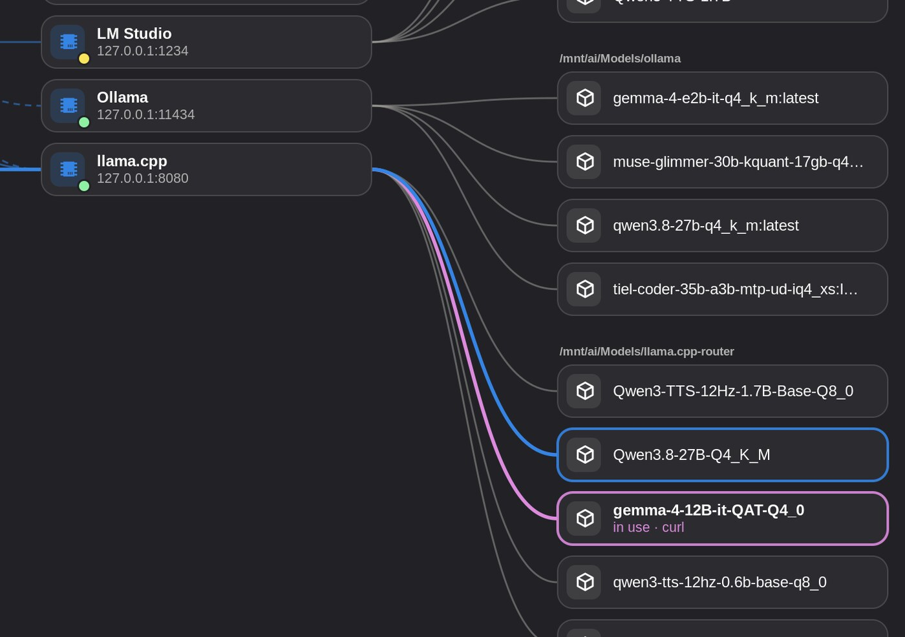
Program spoza mapy (tu curl) generujący z llama.cpp: cyjanowa linia i pole (motyw Tokyo Night). Własna ścieżka Claude Code do opus pozostaje w kolorze akcentu.
Aplikacja sprawdza, które z twoich własnych programów mają otwarte połączenie z lokalnym LLM. Nigdy nie czyta, co wysyłają. Wtyczka jest pokazywana pod własną nazwą, agent pod swoją, a wszystko inne pod nazwą programu. Sama aplikacja i LLM Monitor, które tylko czytają stan, się nie liczą.
Uwaga Światło widać tylko wtedy, gdy program generuje, i gaśnie około dziesięciu sekund po jego ostatnim zapytaniu. Program otwarty, ale bezczynny — Video Trans bez mowy do tłumaczenia — niczego nie pokazuje. Program pozostaje w menu przez pół minuty po ostatnim zapytaniu.
Prawy klik na zainstalowanym lokalnym LLM › Modele… albo kliknij Dodaj model w Konfiguracji. Strona ma listę po lewej i wybrany model po prawej, w trzech kartach.
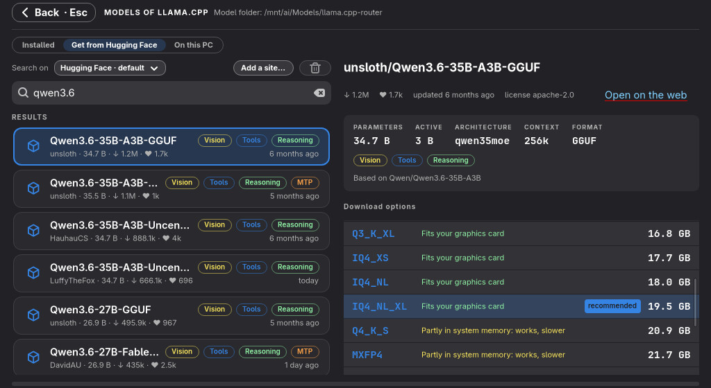
Pobieranie z Hugging Face: co potrafi model i jaki rozmiar zmieści się w twojej karcie graficznej.
Przeglądaj popularne modele czatu GGUF lub szukaj. Każdy wynik pokazuje autora, rozmiar, pobrania, polubienia, wiek i to, co potrafi: Obrazy, Narzędzia, Rozumowanie, MTP. Strona modelu pokazuje parametry, architekturę, kontekst, licencję i kartę modelu. Co znaczy nazwa objaśnia części nazwy, takie jak 35B-A3B czy Q4_K_M.
Opcje pobierania wypisują każdy rozmiar z tym, jak się mieści: w karcie graficznej, częściowo w pamięci RAM (działa, ale wolniej) lub prawdopodobnie za duży. Najlepszy wybór jest już zaznaczony; Pobierz zapisuje go w folderze modeli. Dla Ollamy, która pobiera po nazwie rozmiaru, oferowane są tylko rozmiary, które może pobrać: plik podzielony, plik w podfolderze lub taki, którego Hugging Face odmawia Ollamie, jest przyciemniony, z podanym powodem, i nigdy nie jest polecany.
Pobieranie odbywa się w tle i pojawia się w pasku u góry strony głównej. Gdy połączenie zostanie przerwane, próbuje ponownie i wznawia. Jeśli aplikację zamknięto w trakcie pobierania, jest ono wypisane jako przerwane, z Wznów lub Odrzuć.
Pobieranie modelu lub pull Ollamy, którego połączenie się zerwie, jest ponawiane po 5, 15, 30, 60 i 120 sekundach i trwa dalej od miejsca, w którym stanęło. Jeśli aplikacja zakończy się wcześniej, następne uruchomienie pokazuje baner z każdym przerwanym pobieraniem, miejscem, w którym stanęło, Wznów (kontynuuje od już pobranej części) i Odrzuć. Zapisane jest tylko, jak je uruchomić ponownie, w ~/.local/state/ai-agents-map/jobs.json, czytelnym tylko dla ciebie; pobieranie, które wciąż działa gdzie indziej, nie zostanie uruchomione drugi raz.
Nie wiesz, który model wybrać? Gdy skonfigurowany jest agent do kontroli AI (Ustawienia › Agent do kontroli AI), karta Zapytaj agenta pod wyszukiwarką przyjmuje pytanie zadane własnymi słowami — na przykład model do programowania z długim kontekstem, który zmieści się w mojej karcie graficznej. Pytaj (lub Ctrl+Enter) wysyła je, razem z kartą graficzną, jej pamięcią, pamięcią komputera i modelami, które już masz, do tego agenta, który szuka w sieci; podczas pracy widać animowany wskaźnik i czas, który już upłynął. Po minucie lub dwóch karta pokazuje jego krótkie podsumowanie, a proponowane modele pojawiają się poniżej na liście wyników pod nagłówkiem Propozycje: …: każdy znaleziony w Hugging Face, z rozmiarem i powodem, dla którego pasuje; kliknięcie otwiera jego stronę i opcje pobierania jak przy każdym wyniku wyszukiwania. Propozycja, której nie ma w Hugging Face, jest wymieniona pod nagłówkiem. Proponuje do 10 modeli; Propozycje po prawej stronie wiersza agenta ustawia inną liczbę (5, 10, 15 lub 20). Zużywa tokeny agenta; pytanie nie jest zapisywane, a strona każdego lokalnego LLM pyta osobno.
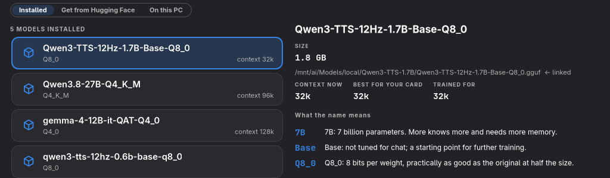
Zainstalowane: kontekst obecny, najlepszy dla twojej karty i treningowy; co znaczy nazwa; Usuń.
Każdy model pokazuje rozmiar, plik i kontekst — obecny, najlepszy dla twojej karty i trenowany na. Usuń najpierw pyta i przenosi pliki do kosza, skąd można je przywrócić. Model, który jest tylko dowiązaniem, traci tylko dowiązanie.
Kontekst to ilość tekstu, którą model może mieć jednocześnie na uwadze. Aplikacja oblicza z samego pliku modelu największy kontekst, który zmieści się w twojej karcie graficznej. Ustaw kontekst zapisuje go w ustawieniach lokalnego LLM, z kopią zapasową i Cofnij. Agenci potrzebują dość dużego kontekstu; gdy łączysz agenta z modelem LM Studio bez ustawionego kontekstu, najlepszy jest ustawiany w tym samym kroku.
Wypisuje pliki GGUF, których lokalny LLM jeszcze nie czyta — w jego folderze modeli, w folderach innych lokalnych LLM,
w ~/Downloads i w ~/Models. Dodaj robi z jednego z nich jego model bez drugiej kopii
(przez dowiązanie), z wyjątkiem Ollamy, która importuje własną kopię.
Prawy klik na modelu llama.cpp, KoboldCpp lub LM Studio › Przenieś do… albo przeciągnij pole modelu na folder innego lokalnego LLM. Najpierw widzisz, ile zostanie przeniesione i który agent używa modelu. Cofnij przenosi pliki z powrotem. Usuń… najpierw pyta i przenosi pliki do kosza.
Ustawienia › Folder modeli ustala jeden folder na modele wszystkich lokalnych LLM. Uporządkuj modele…
pokazuje z góry, jak pliki zostałyby posortowane (<folder>/<wydawca>/<model>/), i nic się
nie zmienia, dopóki nie naciśniesz Uporządkuj. Z opcją Stare ścieżki nadal działają (domyślnie włączoną)
w każdym starym miejscu zostaje dowiązanie. Cofnij ostatnie porządki przywraca wszystko.
Ostrożnie Przy przenoszeniu na inny dysk modele są najpierw kopiowane, a oryginały usuwane dopiero po ukończeniu kopii. Upewnij się, że w miejscu docelowym jest dość wolnego miejsca; w przeciwnym razie aplikacja odmówi przeniesienia.
Naciśnij pole na mapie i przeciągnij do innego, aby je połączyć. Każda zmiana pokazuje przed zapisem dokładnie, które wiersze którego pliku się zmienią, tworzy kopię zapasową i można ją cofnąć z paska, który się pojawi.
Przeciągnij od agenta do lokalnego LLM lub odwrotnie. Aby zmienić połączenie, zaznacz jego agenta (lub kliknij linię): każda linia, którą można przenieść lub usunąć, ma na końcu pomarańczowy uchwyt. Przeciągnij uchwyt do innego lokalnego LLM — lub w puste miejsce, aby ją usunąć; po najechaniu na uchwyt widać, co da jego przeciągnięcie. Narysuj linię od agenta do modelu połączonego lokalnego LLM, aby stał się modelem agenta.
Obsługiwani agenci: Hermes, Pi, Oh My Pi, OpenCode, OpenClaw i DeepSeek Harness.
Przeciągnij od agenta do serwera MCP. Ustawienia serwera są przenoszone do własnego formatu tego agenta. Obsługiwani: Claude Code, Codex, Copilot, Crush, Cursor, Gemini, Goose, Grok, Hermes, Muse, Oh My Pi, OpenClaw, OpenCode i Pi. Pliki ustawień, które mogą zawierać klucze, są zawsze zapisywane tak, aby tylko ty mógł je czytać.
Przeciągnij od agenta do folderu skilli. Pi i Hermes dostają folder w swoich ustawieniach; każdy inny agent dostaje
dowiązanie do każdego skilla we własnym folderze skilli. Folderu, który agent czyta sam z siebie (większość czyta
~/.agents/skills), nie da się odebrać tylko temu agentowi.
Przy każdym otwarciu okna (i po Odśwież) aplikacja szuka na tym komputerze serwerów MCP i
folderów skilli, niczego nie uruchamiając: programów oferujących serwer MCP w
~/.local/bin, ~/Applications, /opt i w folderach dodanych w
Konfiguracji oraz folderów skilli, które przyniosły aplikacje albo które leżą w dodanym folderze. To,
czego żaden agent jeszcze nie używa, jest na mapie jako wyblakłe pole bez linii. Nic nie łączy się
samo.
Serwer MCP aplikacji działa samodzielnie: okno aplikacji nie musi być otwarte. Programów w AppImage, który nie został rozpakowany, nie ma na mapie; Dodaj serwer MCP › Na tym komputerze najpierw je rozpakowuje.
Wskazówka Trzymaj aplikacje z serwerem MCP i własne skille w osobnym folderze każde — na przykład na dysku, który dzieli kilka systemów — i dodaj te foldery w Konfiguracji. Na innym komputerze dodaj tam te same foldery, a wszystko, co w nich jest, znajdzie się też na jego mapie.
Otwórz Połączenia i Dodaj serwer MCP. Wpisz nazwę, wybierz stdio, HTTP lub SSE oraz zainstalowane agenty. Dla stdio podaj program oddzielnie, a argumenty po jednym w wierszu; spacje pozostają częścią argumentu. Dodaj zmienne lub nagłówki jako pary nazwa/wartość; wartości są ukryte. Podgląd pokazuje odbiorców i liczby zmian bez wartości konfiguracji. Zastąpienie definicji o tej samej nazwie jest ujawniane przed zatwierdzeniem. Zastosuj używa kopii zapasowej i Cofnij. AI Agents Map nie uruchamia ani nie testuje tu serwera; agenty mogą go uruchomić po odczytaniu konfiguracji.
Dodaj umiejętności wybiera istniejący folder zawierający foldery z SKILL.md. Wybierz folder nadrzędny i agenty, a następnie sprawdź dowiązania lub ustawienia. Oryginały pozostają; dowiązania uwzględniają późniejsze zmiany. Umiejętności mogą zawierać skrypty wykonywane przez agenty. Natywne foldery już odczytywane nie wymagają nowych dowiązań. Sprawdzanych jest 200 wpisów na folder, jeden poziom kategorii i łącznie 1 000 wpisów; w razie potrzeby wybierz mniejszy folder. Podgląd obsługuje 32 agenty i 200 dowiązań. Cofnij zachowuje późniejsze zmiany. Katalogi internetowe, pobieranie i testy narzędzi MCP nie należą do tych lokalnych formularzy.
Aplikacja przy starcie szuka w tle, niczego nie uruchamiając, programów na tym komputerze, które oferują serwer MCP (ich pliki zawierają słowa właściwe protokołowi; sposób uruchomienia pochodzi z ich własnego tekstu użycia), oraz zestawów skilli, które przyniosły aplikacje. Duże programy są czytane raz i zapamiętywane. Stan kolumny MCP pokazuje Nowe na tym komputerze dla tego, czego jeszcze nie pokazano; Dodaj serwer MCP… lub Dodaj skille…, albo Znalezione na tym komputerze w Połączeniach, wyświetla je, nowe z ★. Dodaj… otwiera formularz wypełniony nazwą i poleceniem startu albo folderem, do sprawdzenia i zmiany przed podglądem. Samo wyszukiwanie nigdy nie uruchamia AppImage. Zajrzyj do środka… rozpakowuje tylko programy każdego z nich, zamknięte przez bubblewrap (bez sieci, bez folderu domowego, zapisywalny tylko folder tymczasowy), czyta je i znowu usuwa; to, co znaleziono, jest zapamiętywane. Dodanie serwera z AppImage najpierw pyta, czy rozpakować cały AppImage do ~/Applications/<app>-<version>/ (Rozpakuj), w ten sam sposób. Nowszy AppImage aplikacji, do której już zajrzano lub którą rozpakowano, jest tylko wymieniany (Znaleziono nową wersję): plik o nowszej nazwie nie dowodzi prawdziwej aktualizacji, więc zagląda się do niego jak do każdego innego.
Gdy aplikacja zostanie znaleziona w nowszej wersji, a agenci, lista serwerów MCP lub link w ~/.local/bin wciąż uruchamiają starszą, lista pokazuje ją z wersjami i tym, kto jej używa. Zaktualizuj… (po rozpakowaniu nowszego AppImage, jeśli to on) pokazuje w podglądzie jedną zmianę dla wszystkiego: każdy wpis dostaje nowy program (argumenty wskazujące stary folder przenoszą się razem z nim), linki wskazują nowy folder, a stary folder trafia do kopii zapasowej. Zostaje tam 7 dni; Cofnij przywraca wszystko.
Zaraz po zapisaniu połączenia aplikacja sprawdza, czy będzie działać: czy lokalny LLM jest zainstalowany i oferuje model, czy serwer MCP odpowiada, czy dowiązania skilli są całe. Nieudane połączenie zostaje na mapie jako czerwona linia przerywana z !; takie z samymi ostrzeżeniami jest żółte przerywane. Kliknij linię lub jej !, aby zobaczyć wskazówki:
Serwery MCP dają agentom dodatkowe narzędzia. + Serwer MCP na mapie lub pod kartami otwiera stronę dodawania: lista po lewej, strona wybranego serwera po prawej.
| Karta | Zawartość |
|---|---|
| Polecane | Serwery referencyjne projektu MCP (Filesystem, Fetch, Git, Memory, Sequential Thinking, Time, Everything) i oficjalne serwery znanych firm (GitHub, Playwright, Chrome DevTools, Brave Search, Context7), pogrupowane według przeznaczenia i przypięte do najnowszej wersji. |
| Rejestr MCP | Wyszukiwanie w oficjalnym rejestrze MCP. Każdy wynik podaje wydawcę tak, jak zweryfikował go rejestr. Wyszukiwanie może trwać dziesięć sekund lub dłużej. Wyniki przychodzą po 20; wiersz pod listą przewija je stronami i pokazuje, gdzie jesteś, na przykład ‹ Poprzednie 20 · 21 – 40 / 200 · Następne 20 › (z / 40+, gdy rejestr nie podaje, ile ich jest). |
| Na tym komputerze | Programy na tym komputerze, które oferują serwer MCP, znalezione przez czytanie ich plików — nic nie jest uruchamiane. Do wnętrza AppImage zaglądamy tylko po kliknięciu Zajrzyj do środka…; są rozpakowywane w zamknięciu przez bubblewrap (bez sieci, bez folderu domowego), więc bwrap musi być zainstalowany. |
| Ręcznie | Wiersz poleceń lub adres internetowy z nagłówkami. |
Nie wiesz, jakiego serwera potrzebujesz? Na karcie Rejestr MCP karta Zapytaj agenta pod wyszukiwarką przyjmuje prośbę zapisaną własnymi słowami — na przykład czytać i pisać moje strony w Notion. Pytaj (lub Ctrl+Enter) sprawia, że agent do kontroli AI zamienia ją na kilka słów wyszukiwania; aplikacja przeszukuje nimi pobraną listę rejestru, tak jak zwykłe wyszukiwanie, a agent wybiera z wyników pasujące serwery, każdy z uzasadnieniem. Nie szuka w sieci, widzi tylko Twoją prośbę i publiczne teksty rejestru i może wybrać tylko serwery, które naprawdę są na liście. Podczas pracy widać animowany wskaźnik i czas, który upłynął; po kilku sekundach do minuty propozycje pojawiają się na liście wyników, do 10 (Propozycje po prawej stronie wiersza agenta: 5, 10, 15 lub 20). Wyszukiwanie wpisane później je zastępuje.
Na tym komputerze szuka też w folderach dodanych przyciskiem Dodaj folder… w
Konfiguracji › Lokalne serwery MCP: w każdym folderze i w folderach aplikacji, które zawiera,
takich jak photocraft-0.16.0/usr/bin.
Strona serwera mówi, kto go stworzył i jak dobrze jest to zweryfikowane, co robi (z rzeczami, o które możesz poprosić
agenta), jak działa — jako program przez npx, uvx lub Docker albo jako usługa sieciowa — i
czego potrzebuje, na przykład folderu lub klucza API z linkiem, gdzie go zdobyć. Poniżej Skonfiguruj:
Uwaga Wartości tajne, takie jak klucze API, są przekazywane w środowisku lub nagłówkach, nigdy w wierszu poleceń, gdzie mogliby je odczytać inni użytkownicy komputera. Serwer, który potrzebowałby sekretu w wierszu poleceń, trzeba skonfigurować ręcznie.
Znajdź serwery MCP… w Połączenia otwiera karty Polecane (przy otwarciu przypięte do najnowszej wersji) i Rejestr MCP (po 20 wyników z ‹ Poprzednie 20 i Następne 20 ›; lista rejestru pobiera się w tle, by wyszukiwanie było szybsze). Strona serwera mówi, kto go zrobił, co robi, czego potrzebuje i Jak działa; sposób, który może działać na tym komputerze, jest oznaczony jako zalecany, a brakujący npx, uvx lub Docker jest wymieniony. Wypełnij potrzebne pola (tajne są ukryte), sprawdź Nazwa, zaznacz agentów i kliknij Podgląd: podgląd, Zastosuj i Cofnij są takie jak przy zmianie połączeń. Do usługi trafiają tylko wpisane wartości; samo polecenie pochodzi z wpisu serwera i jest tam sprawdzane ponownie. Sekret, który trafiłby do wiersza poleceń, jest odrzucany; taki serwer trzeba skonfigurować ręcznie.
Testuj uruchamia raz wybrany sposób (albo pyta jego adres) i wypisuje narzędzia, które oferuje, zanim cokolwiek zostanie zapisane. Już skonfigurowany serwer pokazuje Narzędzia w swojej karcie w Połączenia: ostatnią odpowiedź z datą oraz Zapytaj serwer (lub Zapytaj ponownie), co uruchamia go raz tak, jak robi to jego pierwszy agent, i potem zatrzymuje. Są tam też jego Prompty. Odpowiedź zostaje na następny raz; klucze z jego ustawień trafiają prywatnie do pytającego procesu i nigdy nie są pokazywane.
ⓘ Szczegóły na karcie serwera MCP pokazują plik ustawień każdego agenta, polecenie lub adres i, na żądanie, narzędzia serwera; wartości kluczy nigdy nie są pokazywane. Usuń odbiera go wszystkim agentom. Serwery zostają na liście, gdy żaden agent już ich nie używa, aby linia mogła je ponownie połączyć.
Gdy w ~/Applications pojawi się nowsza wersja aplikacji udostępniającej serwer MCP, mówi o tym wskazówka.
Zaktualizuj… rozpakowuje nową wersję, kieruje do niej każdego agenta i zachowuje starą przez siedem dni jako kopię
zapasową. Sprawdź aktualizacje (w Na tym komputerze) robi to po twoim kliknięciu dla wszystkich takich
aplikacji naraz: zagląda do nowych wersji, proponuje wszystkie aktualizacje w jednym podglądzie z kopią zapasową i
Cofnij, a potem testuje każdy zaktualizowany serwer; wskazówka wymienia każdy, który nie odpowiada.
Skill to folder z instrukcjami, które uczą agenta określonego zadania. + Skille otwiera stronę zbudowaną tak jak strona MCP.
~/.agents/skills.Ostrożnie Skille mogą zawierać skrypty, które agent może później uruchomić. Strona pokazuje repozytorium i wypisuje skrypty, zanim cokolwiek zostanie pobrane — przejrzyj je.
Na tym komputerze szuka też w folderach dodanych przyciskiem Dodaj folder… w Konfiguracji › Skille.
Znajdź skille w sieci… w Połączenia szuka w skills.sh. Wynik podaje swoje repozytorium GitHub i ile razy go zainstalowano; wybranie go pobiera pliki skilla — najwyżej 150 plików i 30 MB, bez dowiązań, nic spoza jego folderu — i żadnego z nich nie uruchamia. Karta pokazuje opis, liczbę plików i skrypty, które agent mógłby później uruchomić. Wybierz folder, do którego trafi (Do: wspólny ~/.agents/skills lub jeden z twoich folderów skilli), zaznacz agentów w Także dla i kliknij Podgląd: nowe pliki są wymienione, a Zastosuj zapisuje je z kopią zapasową, więc Cofnij znów je usuwa. Skill, którego folder już istnieje, nie zostaje nadpisany. Do tego czasu pobrane pliki czekają w prywatnym folderze; każdy jest porównywany z tym, co pokazał podgląd, zanim zostanie zapisany.
Każda karta folderu skilli pokazuje jego skille i agentów, którzy go czytają. Folder udostępniany przez dowiązania pojawia się raz, tam, gdzie naprawdę jest. ⓘ Szczegóły wypisują każdy skill z opisem i tym, jak każdy agent dostaje folder.
Gdy otwierają się szczegóły agenta, którego użycie zbiera Omarchy (plan, limity i kiedy się odnawiają), aplikacja w tle prosi Omarchy o świeże dane, jeśli ostatnie są starsze niż dziesięć minut lub starsze niż ostatnie logowanie agenta, a potem je pokazuje; najwyżej raz na dziesięć minut na agenta. Ustawienia › Narożniki ustala narożniki kart, okien dialogowych i pól mapy: Jak okna podąża za zaokrągleniem okien Hyprland (z liczbą pikseli), Lekko zaokrąglone (6 px), Zaokrąglone (12 px) lub Proste. Każda kontrolka podąża w trzech rozmiarach: przyciski, listy wyboru i pola najwyżej 8 px, pola wyboru i paski postępu najwyżej 4 px.
Koło zębate (Ctrl+,) otwiera ustawienia. Backspace lub Esc wraca. Sekcje są po lewej (Ogólne, Wygląd, Mapa, Agenci, Lokalne LLM, Dyktowanie, Ostatnie zmiany); Szukaj w ustawieniach nad nimi pokazuje ustawienia ze wszystkich sekcji, w których pojawia się to, co wpisujesz.
| Ustawienie | Co robi |
|---|---|
| Język | Język systemu albo English, Deutsch, Français, Español, Italiano, Português, Nederlands, Polski. |
| Wygląd | Kolory motywu Omarchy lub wygląd Adwaita z GNOME z jasnym/ciemnym trybem i kolorem akcentu systemu. |
| Animacje mapy | Światło biegnie wzdłuż linii mapy: Agenci i inne programy (linia pracującego agenta i linia lokalnego LLM do modelu, którego używa inny program), Tylko moi agenci lub Wyłączone. Mała animowana mapa pod ustawieniem pokazuje, co porusza każdy wybór. |
| Pole statystyk użycia | Liczby wzdłuż linii pracującego agenta (zob. Praca z mapą): włączone lub nie, które z Tokeny na sekundę, Rozmiar kontekstu i Użyty kontekst pokazuje oraz Rozmiar tekstu (domyślnie 7 pt). |
| Podagenci | Dla strony Podagenci: jak długo zostają zakończeni podagenci (domyślnie 30 minut; 10, 30, 60 lub 120) i ilu najwyżej (domyślnie 10; 5, 10, 20 lub 40). Pracujący są zawsze pokazywani. |
| Koszty | Waluta: dolar amerykański albo euro po dziennym kursie referencyjnym Europejskiego Banku Centralnego (pobieranym raz dziennie z ecb.europa.eu). Dzienny limit dla agenta płatnego za token (domyślnie 100; od 10 do 500). Żółty od i Czerwony od: udział zużycia, przy którym wskaźnik kosztu lub bateria robi się żółta (domyślnie 75 %) i czerwona (90 %). Powiadom przy czerwonym (domyślnie włączone): powiadomienie na pulpicie, gdy agent robi się czerwony — raz dla każdego limitu aż do jego odnowienia albo raz dziennie dla kosztu. |
| Karty terminali nad mapą | Jedna karta na każdy terminal agenta w oknie. |
| Narożniki | Jak w oknach, lekko zaokrąglone (6 px), zaokrąglone (12 px) lub proste; przyciski, listy wyboru i pola najwyżej 8 px, pola wyboru i paski postępu najwyżej 4 px. |
| Uruchamiaj lokalne LLM razem z agentami | Strażnik w tle z sekcji Uruchamianie i zatrzymywanie z agentami. |
| W programie uruchamiającym | Wpis w programie uruchamiającym; wyłączenie go usuwa. |
| Agenci startują w | Folder, w którym startują agenci. |
| Funkcje AI: Sprawdzaj nowe agenty | Pytanie zainstalowanego agenta, gdzie nieznany agent trzyma swoje ustawienia (domyślnie włączone). |
| Funkcje AI: Codzienne kontrole AI | Raz dziennie agent szuka w sieci nowych wersji twoich serwerów MCP (domyślnie wyłączone; zużywa tokeny agenta). Zob. Smart Check. |
| Funkcje AI: Agent do kontroli AI | Claude Code lub Codex: wykonuje kontrole i wyszukiwania AI oraz przejmuje zadania Zrób to z … i Napraw z …. |
| Funkcje AI: Lokalny pomocnik | Agent z modelem twojego lokalnego LLM do pomocy AI, która nie potrzebuje sieci (wyłączony, dopóki go nie wybierzesz). Zob. Lokalny pomocnik. |
| Folder modeli | Jeden folder na wszystkie modele, z Uporządkuj modele…. |
| Dodatki | Szukaj dodatków online, strona dodatków i Konfiguracja. |
| O programie | Wersja, autor i licencja; Strona otwiera projekt na GitHubie, a Zgłoś problem jego listę zgłoszeń. |
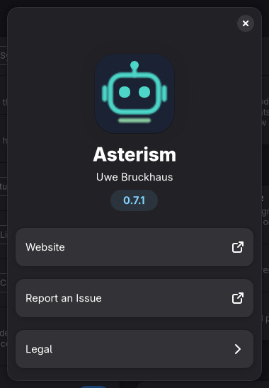
Ustawienia › O programie.
Aplikacja raz na minutę sprawdza limity planu zainstalowanych agentów (5-godzinna sesja, tydzień…). Gdy któryś jest zużyty do czerwonego poziomu z Ustawienia › Koszty, mówi o tym powiadomienie na pulpicie, z zużytą częścią i czasem resetu limitu: raz na limit, aż się zresetuje, także po ponownym uruchomieniu. Powiadom przy czerwonym w Ustawieniach je wyłącza. Koszt agenta płacącego za tokeny nie jest jeszcze pokazywany w podglądzie, więc i jego powiadomienie.
Przycisk mikrofonu w polu Zapytaj AI pozwala wypowiedzieć prośbę zamiast ją wpisywać:
kliknięcie zaczyna, drugie kończy. Ustawienia › Używaj dyktowania w Zapytaj AI wybiera
Automatycznie (dyktowanie Omarchy tam, gdzie jest, w przeciwnym razie Superwhisper),
Dyktowanie Omarchy (omarchy-dictation z domyślnym narzędziem dyktowania Omarchy;
samo wpisuje słowa w pole), Superwhisper (przez jego wiersz poleceń; po zatrzymaniu tekst
tego dyktowania trafia do pola) albo Wyłączone. Bez żadnego z nich przycisk jest ukryty.
Aplikacja sama niczego nie nagrywa ani nie przechowuje; narzędzia prowadzą własną historię zgodnie
z ich ustawieniami.
? (F1) otwiera pomoc: Otwórz instrukcję otwiera tę instrukcję (wydanie dołączone do twojej wersji, w twoim języku) w przeglądarce PDF; Miejsce na dysku (niżej); animacja o konfigurowaniu przez rysowanie; oraz LLM Monitor, towarzysząca wtyczka paska, która pokazuje, co robi lokalny LLM (mała animacja jego wpisu na pasku i panelu). Obie animacje są rysowane w kolorach twojego motywu i natychmiast podążają za zmianą motywu. Legenda ⓘ w nagłówku objaśnia każdą kropkę, linię i znacznik na mapie.
Wypełnione i w nagłówku otwiera Informacje: karty innych wtyczek autora, odczytywane z Omarchy Plugin Marketplace przy otwarciu strony, najwyżej raz na godzinę (bez sieci lista, którą zna ta wersja). Kliknięcie karty otwiera stronę wtyczki w marketplace.
? w nagłówku (lub F1) otwiera Pomoc: Otwórz instrukcję otwiera tę instrukcję w twoim języku (kopię dołączoną do aplikacji, inaczej angielską) w przeglądarce PDF pulpitu. Zakładki u góry Pomocy prowadzą do Twój pierwszy agent, Co możesz z tym zrobić, Agenci (lista agentów), Dostawcy i modele i Połączenia; Użycie pokazuje uruchomienia AI z ostatnich 30 dni. Od czego zacząć prowadzi do Znajdź istniejącą AI. Mapa AI w nagłówku wraca do mapy z każdej z tych stron.
Miejsce na dysku: agenci, lokalne LLM i modele pokazuje, ile miejsca zajmuje twoja konfiguracja AI i gdzie. Jest mierzone w tle przy każdym otwarciu pomocy (ponownie po dziesięciu minutach lub przez Zmierz ponownie) i tylko odczytywane — stąd nic nie jest usuwane. Nagłówek zawsze pokazuje sumy w jednym wierszu (Agenci · Lokalne LLM · Modele · Razem); kliknięcie zwija sekcję. Dyski, Agenci, Lokalne LLM i Foldery modeli zaczynają zwinięte, każdy ze swoją sumą i największymi elementami; kliknięcie je otwiera.
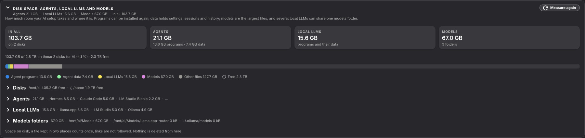
Sumy, udział AI w całym miejscu na dysku i zwinięte sekcje z sumami.
mise prune, które
usuwa nieużywane. Folder modeli mówi, które lokalne LLM go używają, albo że zawiera tylko dowiązania do modeli w innym
folderze.Wskazówka Programy można zainstalować ponownie, a modele pobrać ponownie; dane agentów zawierają twoje sesje i ustawienia. Gdy brakuje miejsca, najpierw przejrzyj stare wersje programów i modele, których już nie używasz.
Rozmiary to miejsce na dysku: plik trzymany w dwóch miejscach liczy się raz, a dowiązania nie są śledzone.
Smart Check pozwala zainstalowanemu agentowi online — Claude Code lub Codex — przyjrzeć się konfiguracji AI tego komputera, znaleźć aktualizacje twoich serwerów MCP i wykonać za ciebie naprawy, a także pokazuje, ile to kosztowało w tokenach. Lokalny pomocnik — agent z modelem twojego własnego lokalnego LLM — może przejąć pytania, które nie potrzebują sieci, na tym komputerze i bez tokenów. Każde uruchomienie pokazuje swój postęp w polu nad oknem i jest zachowywane w Protokole. W Pomocy otwiera go Użycie · Smart Check. Ustawienia › Agent do kontroli AI wybiera, który.
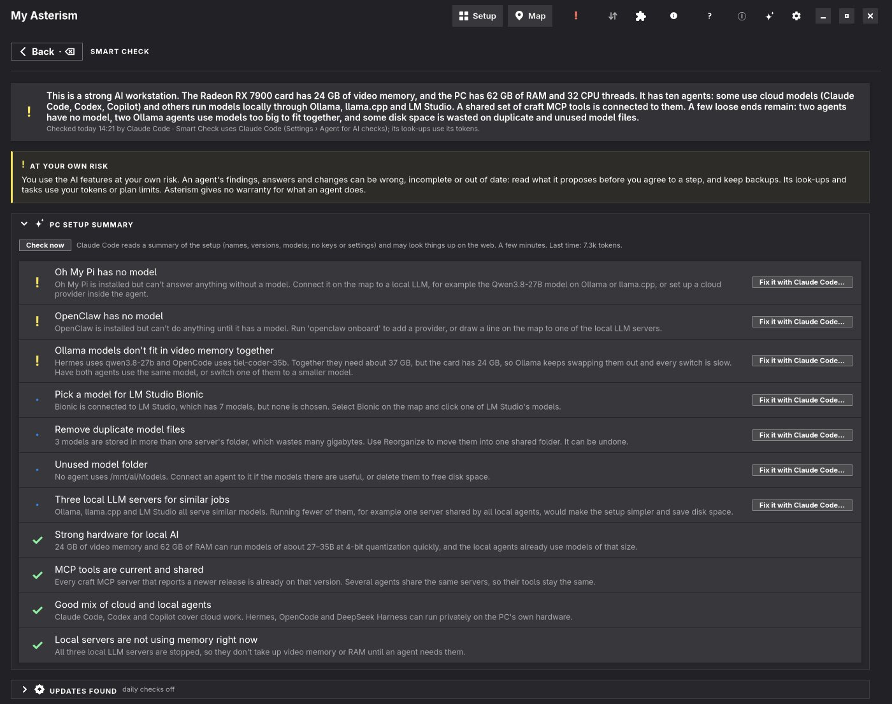
Smart Check po kontroli przez Claude Code: problemy (!), wskazówki (·) i to, co jest dobre (✓).
Na własne ryzyko Ustalenia, odpowiedzi i zmiany agenta mogą być błędne, niepełne lub nieaktualne. Przeczytaj, co proponuje, zanim zgodzisz się na krok, i miej kopie zapasowe. Jego wyszukiwania i zadania zużywają twoje tokeny lub limity planu. Aplikacja nie daje żadnej gwarancji za to, co robi agent. Ta sama uwaga otwiera Ustawienia › Funkcje AI.
Sprawdź teraz daje agentowi krótki tekst o konfiguracji — karta graficzna i pamięć, agenci z ich modelami, lokalne LLM, serwery MCP z wersjami, skille i to, co znalazł Stan kolumn — i pozwala mu sprawdzać rzeczy w sieci. Nie ma w nim kluczy, nagłówków ani wartości ustawień. Trwa to minutę lub dłużej w tle; wiersz pod przyciskiem mówi, ile tokenów zużyła ostatnia kontrola. Odpowiedź to krótkie podsumowanie i lista wyników: ! problemy, · wskazówki i ✓ to, co jest dobre. Odpowiedzi, które się nie potwierdzają, są pomijane.
Napraw z … obok problemu lub wskazówki otwiera agenta w karcie terminala w oknie z tym wynikiem jako zadaniem: sprawdza, czy tak jest, wyjaśnia i pyta cię przed każdym krokiem, który coś zmienia. Aplikacja uruchamia go tak, że musi pytać — Codex w piaskownicy tylko do odczytu, która prosi o więcej, Claude Code z każdym poleceniem i edycją ustawionymi na pytanie, bez względu na jego własną listę dozwolonych — i bez jego serwerów MCP. Wynik jest przekazywany jako dane do sprawdzenia, nie jako instrukcje. Przeniesienie serwerów MCP na nową wersję zostaje dla Aktualizuj aplikacji (niżej), które zmienia ustawienia wszystkich agentów naraz, z kopią zapasową i Cofnij.
Nowe wersje twoich serwerów MCP, z dwóch źródeł:
~/Applications/<app>-<version>/ lub jako rozpakowany AppImage w dowolnym innym folderze (program w <folder>/<app>-<version>/usr/bin/) oraz pakietów npm lub PyPI
przypiętych do wersji. Sprawdź teraz na tej karcie pyta od razu, także gdy codzienne kontrole są wyłączone.
Każde znalezisko ma Strona wydania i Zrób to z …: agent pobiera nowy AppImage w karcie terminala,
pytając przed każdym krokiem.Gdy nowa wersja jest na tym komputerze, jej wiersz to mówi i oferuje Użyj…: podgląd aktualizacji pokazuje, którzy agenci na nią przejdą; Aktualizuj zmienia ich wszystkich, zachowuje starą wersję w kopii zapasowej i potem testuje każdy serwer. Serwer, którego wszyscy agenci uruchamiają już nową wersję, znika z listy.
Wskazówka Po działaniu rozpoczętym tutaj — aktualizacji lub zadaniu w karcie terminala — Wstecz przenosi cię z powrotem do Smart Check, z aktualnym stanem.
Każde uruchomienie pomocy AI — Sprawdź teraz, Zapytaj agenta na stronach Modele i Dodaj serwer MCP, Sprawdź teraz dla aktualizacji, Zapytaj na karcie Wydajność lokalnego LLM — pokazuje pole na środku okna: kogo pytamy (agenta i jego model), jego kroki (animowany wskaźnik, który zmienia się w ✓, albo w ✗, gdy krok się nie udał), dotychczasowy czas i na końcu zużyte tokeny.
Wyszukiwania w sieci (porady dotyczące modeli, aktualizacje MCP) działają z siecią i niczym więcej: bez serwerów MCP, konektorów, wtyczek i hooków agenta.
Agent połączony z lokalnym LLM może odpowiadać na pomoc AI jednym z modeli tego LLM: na tym komputerze, bez sieci, bez tokenów planu i bez wysyłania czegokolwiek poza komputer. Odpowiada na to, co nie potrzebuje sieci: podsumowanie Smart Check, który serwer MCP pasuje oraz wskazówki na karcie Wydajność lokalnego LLM. Porady dotyczące modeli i aktualizacje serwerów MCP nadal trafiają do agenta online, bo potrzebują sieci.
Aplikacja proponuje jeden — największy model czatu, jaki zmieści twoja karta graficzna (modele mowy, embeddingów i tokenizerów są pomijane) — w Smart Check, z Użyj. Ustawienia › Funkcje AI › Lokalny pomocnik wymienia każdego agenta i model, który może nim być, proponowany jako pierwszy, oraz Wyłączone. Nic nie jest używane, dopóki tego nie wybierzesz. Zanim odpowie, aplikacja uruchamia lokalny LLM i ładuje model (krok w polu postępu). Pomocnik działa bez narzędzi, bez serwerów MCP, bez rozszerzeń i bez plików projektu. Pomocnikiem może być każdy agent, którego dodatek mówi, jak zadać mu jedno pytanie offline; Pi jest pierwszy.
W Ustawieniach › Funkcje AI są Codzienne kontrole AI (domyślnie wyłączone), a pod nimi wynik ostatniej kontroli z przyciskiem Sprawdź teraz, który pyta od razu, także gdy codzienne kontrole są wyłączone. Kontrola działa w tle po otwarciu okna i jest sprawdzana co godzinę; agent do kontroli AI jest pytany najwyżej raz dziennie (po nieudanym wyszukiwaniu ponownie po sześciu godzinach). To, co znajdzie, pojawia się w stanie kolumny MCP: Strona wydania otwiera wydanie w przeglądarce, Zrób to z … najpierw pokazuje zadanie w takiej postaci, w jakiej zostanie wysłane, i uruchamia je w karcie terminala dopiero po Wznów, a Użyj… otwiera to, co znaleziono na tym komputerze, gdy nowsza wersja już tu jest. Sprawdzane są tylko serwery, których wersję aplikacja potrafi rozpoznać (zob. Znalezione aktualizacje); inne serwery nie są wysyłane.
Lokalnego pomocnika wybiera się w Ustawieniach › Funkcje AI › Lokalny pomocnik; propozycja dla Twojej karty graficznej jest oznaczona jako (sugerowany). Po wybraniu jest proponowany jako pierwszy w Pytaj na karcie Wydajność lokalnego LLM.
Każde uruchomienie pomocy AI jest zachowywane, żebyś ty — albo ktoś, kto dobrze zna konfigurację — mógł przejrzeć, co zostało zrobione. Każdy wpis pokazuje, kiedy działał, agenta i model, wynik (udało się, nie udało się, anulowano), czas i tokeny. Po otwarciu pokazuje cały tekst: opcje, które zamknęły agenta w granicach, kroki, każde pytanie dokładnie tak, jak zostało wysłane, z odpowiedzią agenta, co aplikacja zmieniła na podstawie odpowiedzi (z kopią zapasową, do ręcznego Cofnij) oraz, dla zadania w karcie terminala, co terminal pokazywał, gdy się skończyło. Kopiuj umieszcza wpis w schowku do zgłoszenia lub drugiej opinii; Otwórz folder protokołu pokazuje pliki.
Protokół przechowuje ostatnie 200 uruchomień w ~/.local/state/ai-agents-map/ai-help/, czytelnych
tylko dla ciebie. Pytania zawierają nazwy, liczby i ustawienia, nigdy klucze; tekst terminala zawiera to, co było
na ekranie.
Tokeny zużyte dziś i w ostatnich 30 dniach, wykres dla każdego dnia oraz sumy według agenta i według wtyczki (inne wtyczki Omarchy, które używają tego samego pomocnika AI, też się tu pojawiają). Wartość API to koszt tych uruchomień po cenach API, a wiersz pod nią mówi, czy pokrywa to twoja subskrypcja, czy obciąża to klucz API. Zadanie w karcie terminala liczy się we własnej sesji swojego agenta; te tokeny pokazuje strona szczegółów agenta.
Poniżej jedna karta na każdy rodzaj zadania — kontrolę konfiguracji, aktualizacje serwerów MCP, wyszukiwanie nowych agentów, naprawy — z jej uruchomieniami, tokenami i najnowszymi wynikami.
Każda kolumna mapy AI ma kartę grupy. Przerywana ramka oznacza brak konfiguracji; liczba pochodzi z lokalnego wykrywania. Zastępcze karty są wyłącznie wizualne, nigdy połączonymi węzłami ani danymi dla AI. Użyj Rozwiń, dwukliku lub Enter na aktywnej karcie. Grupa pojawia się sama na środku. Wstecz, Esc, Backspace lub tło przywraca powiększenie i wybór.
Karta serwerów MCP, karta skilli i folder modeli obsługiwany przez lokalny LLM kończą się przerywaną kartą +: Dodaj serwer MCP otwiera katalog MCP (polecane serwery, rejestr i to, co jest na tym komputerze), Dodaj skille wyszukiwanie skilli w sieci, a Dodaj model pobieranie modeli dla lokalnego LLM, który obsługuje ten folder. Po rozwinięciu kolumna Serwery MCP i skille oraz kolumna Modele pokazują te same działania zamiast dodatków, które istnieją tylko dla agentów i dostawców.
Agent, którego dodatek jest włączony, ale którego programu nie ma jeszcze na tym komputerze (na przykład Codex po włączeniu jego dodatku), dostaje na mapie przerywaną kartę na końcu karty Agenci, z nazwą i Niezainstalowany. Kliknięcie jej lub Zainstaluj … w jej menu ⋯ otwiera zwykły przegląd instalacji; instalacja działa w terminalu, który możesz obserwować. Menu ma też Dodatek… i Wyłącz. Gdy program jest zainstalowany, karta staje się zwykłym polem agenta. Zwinięta karta pomija te karty. Pomoc › Agenci i Zapytaj AI nadal też instalują agentów.
Mapa pokazuje agentów w dwóch kartach: Agenci online i pod nią Agenci lokalni dla agentów stworzonych dla lokalnego LLM (jak Pi). Programy do zainstalowania kończą kartę agentów online. Lokalny LLM, którego dodatek jest włączony, ale który nie jest jeszcze zainstalowany (na przykład vLLM), dostaje taką samą przerywaną kartę na końcu karty lokalnych dostawców; kliknięcie otwiera przegląd instalacji lokalnego LLM. Pole, którego dodatek właśnie włączyłeś, pojawia się od razu, także w karcie, która pokazuje tylko połączone lub przypięte.
Grupy pokazują Włączone, Wyłączone, Znalezione na tym komputerze i Niezainstalowane zależnie od zawartości. Menu lub prawy przycisk oferuje przełączanie, szczegóły, nowszą podpisaną wersję lub logowanie do dostawcy przez zainstalowany agent. Szczegóły opisują odczyt, wysyłanie i możliwości. Zmiany działają od razu z Cofnij i są blokowane podczas własnych sesji agentów tej aplikacji lub aktywnej instalacji. Agenty w innych terminalach nie blokują zarządzania dodatkami. Szukaj dodatków online jawnie ładuje podpisany katalog; samo rozwinięcie tego nie robi. Sprawdź każdą instalację i aktualizację. Nowe dodatki pozostają wyłączone. Usunięcie dodatku użytkownika tworzy kopię i zachowuje programy oraz dane; cofnąć można do zamknięcia aplikacji. Dołączone dodatki należą do pakietu.
Karta z napisem Stworzony dla Asterism zawiera dodatek sprzed zmiany nazwy tej aplikacji, podpisany starym kluczem. Nigdy nie jest ładowany i zasłania kopię dostarczaną z AI Agents Map: usuń go z menu karty, a AI Agents Map użyje własnej.
Po potwierdzonym usunięciu kopie starsze niż 30 dni mogą być czyszczone. Kopie z aktywnym Cofnij pozostają; łącza, obce foldery i foldery innych właścicieli są pomijane. Cofnij działa do zamknięcia aplikacji. Przy pierwszym użyciu Agenty w powitaniu otwierają tę samą grupę ze stałym paskiem Włącz / Później; nie kończą powitania ani nie otwierają zwykłego widoku.
Zainstaluj z pliku… bierze dodatek .zip pobrany przez ciebie. Decyduje jego własny podpis, tak jak przy pobraniu z katalogu: plik jest najpierw sprawdzany i pokazywany jak pozycja katalogu (nazwa, wersja, rodzaj, co czyta i wysyła oraz czy zastępuje zainstalowaną wersję), a nic nie jest instalowane, dopóki nie potwierdzisz. Wtedy plik jest czytany ponownie i musi to być wciąż ten sprawdzony. Na razie można używać tylko dodatków agentów i dostawców.
Powitanie nad mapą zawiera Sprawdź ten komputer / Pomiń. Zamontuj istniejące dyski przed wyszukiwaniem. Agenty otwierają się z zaznaczonymi wykrytymi pozycjami i stałym paskiem Włącz / Później na dole. Włącz jest jedną operacją zbiorczą z jednym Cofnij; Później zachowuje wybory. Inne włączone typy dodatków pozostają. Kolejne uruchomienia nie rozwijają grupy automatycznie. Modele prowadzą do pobierania/importowania i ponownego użycia folderów; MCP i umiejętności do Połączeń. Nowe definicje MCP i foldery umiejętności nadal czekają na migrację. Rakieta otwiera przewodnik pierwszego agenta. Grupy zastępują strony Konfiguracja i Dodatki.
Przeciągnij agenta do dostawcy, serwera MCP lub zestawu umiejętności albo rysuj w drugą stronę. Narysuj linię od agenta do modelu połączonego dostawcy, aby wybrać ten model. Zwykłe kliknięcie tylko zaznacza. Drugie kliknięcie wybranego pola usuwa zaznaczenie. Linia od dostawcy do jego modelu otwiera wybór agentów; obsługiwany dostawca lokalny może też ładować bez agenta. Każda zmiana przechodzi przez Podgląd, Zastosuj, postęp i wynik z Cofnij. Anulowanie niczego nie zapisuje.
Serwer bez agentów pozostaje jako przygaszone pole: narysuj do niego linię, aby połączyć go ponownie, albo usuń go poleceniem Usuń w jego menu. Linia do folderu skilli, który agent czyta sam lub przez inny folder, nie ma uchwytu; kliknij ją, aby zobaczyć powód. Wybierz pole lub kliknij linię, aby pokazać pomarańczowe uchwyty. Z obramowaniem kart linie kończą się na brzegu karty, zamiast ją przecinać. Ustawienia › Mapa nadają kolor każdemu rodzajowi linii, a kolor obramowania może pochodzić z motywu. Rogi karty podążają za Ustawienia › Rogi. Symbol filtra w nagłówku karty pokazuje tylko pola połączone lub przypięte, a potem znów wszystkie. Przeciągnij uchwyt do zgodnego dostawcy lub modelu albo na puste miejsce, aby rozłączyć. Uchwyt modelu dostawcy przełącza wszystkich skonfigurowanych użytkowników albo rozłącza ich i zwalnia model, jeśli to obsługiwane. Zajęty silnik odmawia zwolnienia. Dostawcy online używają zarejestrowanego polecenia logowania lub wylogowania w terminalu po przeglądzie.
Narysowanie agenta do jego własnego dostawcy online loguje go; dopóki nie jest zalogowany (nie ma jego pliku logowania ani klucza), ta linia jest rysowana jako dostawca, z którego może korzystać, a nie z którego korzysta. Agent, którego logowania aplikacja nie może uruchomić, na przykład Grok, który czyta tylko swój klucz API, zostaje odrzucony z tym powodem. Innego dostawcę online, z którego agent może korzystać przez swoje ustawienia, wybiera się, rysując agenta do jednego z modeli tego dostawcy; dostawca, z którego nie może korzystać, zostaje odrzucony z krótką notatką. Model, na który agent jest ustawiony, a którego jego lokalny LLM już nie ma, zostaje na mapie, oznaczony jako brakujący, ze swoją linią. Modele używane przez agentów i wybrany model dostawcy są pokazywane także poza pierwszą dziesiątką dostawcy. Modele z folderu użytego ponownie z Znalezione na tym PC, których nie wymienia żaden lokalny LLM, mają własną kartę.
Najechanie podświetla sąsiadów. Shift-klik dodaje pola, najwyżej jednego agenta. Przypnij utrzymuje podświetlenie. Wybrane pole wyszarza wszystkie pozostałe i ich linie; przypięte pola i ich linie pozostają. Wybrane pole ma grubszą ramkę. Zwiń kartę strzałką, przeciągnij nagłówek lub użyj menu. Przeciągnij uchwyt kolejności albo wybierz Przesuń w górę / Przesuń w dół. Układ i przypięcia zapisują się oddzielnie od połączeń; karty zadań zachowują wybór i powiększenie.
Przeciągnij lewą lub prawą krawędź kolumny, aby zmienić jej szerokość i szerokość jej pól. Aplikacja ją zapamięta; dwuklik na krawędzi przywraca domyślną. W Ustawienia › Mapa są obie szerokości każdej kolumny. Można tam też włączyć obramowanie kart kategorii i wybrać jego grubość i kolor.
Połączenia, działania agentów, usuwanie modeli i zmiany dodatków otwierają się w wyśrodkowanym oknie nad przyciemnioną stroną. Przeciągnij krawędzie lub rogi, aby zmienić rozmiar; dwukrotne kliknięcie krawędzi go przywraca. Rozmiar obowiązuje do zamknięcia aplikacji, a terminal i Zapytaj AI korzystają z tego samego. Przy odłączaniu linii myszą, gdy nie ma o czym ostrzegać, aplikacja pyta tylko o Zastosuj lub Anuluj, a potem oferuje Cofnij. Strony takie jak przegląd dostawców, Ustawienia i Połączenia pozostają pełnymi stronami.
Sprawdź zmiany przed zatwierdzeniem. To samo okno pokazuje postęp i wynik; użyj Cofnij, jeśli jest dostępne. Wstecz lub Esc odrzuca podgląd albo zamyka zakończone okno. Nie zamykają trwających zadań; tylko operacje obsługujące anulowanie pokazują Anuluj. Gdy okno jest otwarte, przyciski nagłówka i klawisze aplikacji czekają.
Ustawienia › Co jest dozwolone zawiera twoje reguły tego, co jest dozwolone, dla Zapytaj AI i dla tego, co rysujesz na mapie: listę Zezwól i listę Odmów, każdą z +. Reguła wskazuje działanie oraz, jeśli chcesz, kategorię, element i agenta. Decyduje najbardziej szczegółowa reguła: najwięcej znaczy element, potem agent, kategoria, działanie. Przy remisie wygrywa zezwolenie, a żądanie bez pasującej reguły jest odrzucane. Tak więc po dodaniu do domyślnych „odmów odłączania, skille” reguła „zezwól na odłączanie, skille, Pi” pozwala Pi działać dalej. Przywróć domyślne przywraca zezwolenie na wszystko, a pasek na dole sprawdza żądanie. Gdy coś zostanie odrzucone, aplikacja wskazuje regułę, chyba że to wyłączysz. Te reguły są zabezpieczeniem, nie zamkiem: każdy, kto otworzy Ustawienia, może je zmienić, a agent w terminalu działa na twoim koncie.
Agent programistyczny czyta i zapisuje pliki oraz uruchamia polecenia na twoim komputerze. Ile może zrobić bez pytania cię, zapisano w jego własnych ustawieniach, innymi słowami dla każdego agenta. Kontrola stanu i bezpieczeństwa zbiera to razem: na stronie szczegółów każdego agenta i każdego lokalnego LLM cztery karty pokazują, czy działa, co może robić, co to znaczy prostymi słowami i co zmniejsza ryzyko.
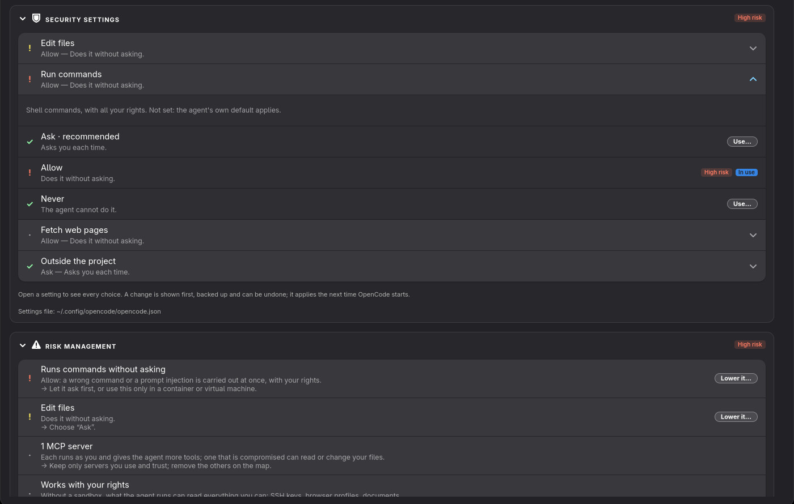
Ustawienia bezpieczeństwa OpenCode z otwartym Uruchamianie poleceń i początek jego zarządzania ryzykiem.
Plakietki na zwiniętych kartach to podsumowują: W porządku, Do sprawdzenia lub Nieskonfigurowany przy Stanie oraz Niskie ryzyko, Średnie ryzyko lub Wysokie ryzyko przy Ustawieniach bezpieczeństwa i Zarządzaniu ryzykiem. Otwórz kartę, aby zobaczyć szczegóły:
| Karta | Co pokazuje |
|---|---|
| Stan | Każde sprawdzenie konfiguracji z ✓ albo co zrobić dalej: zainstalowany, zalogowany, jego model i lokalny LLM, serwery MCP i skille. |
| Ustawienia bezpieczeństwa | Ustawienia agenta, które decydują, co może robić samodzielnie, każde z obecną wartością i zdaniem o tym, co ona znaczy. Znak przed nim podaje ryzyko: ✓ bezpieczne, · niskie, żółty ! średnie, czerwony ! wysokie. |
| Zarządzanie ryzykiem | Co ustawienia znaczą razem, najpoważniejsze najpierw, każde z powodem i → tym, co je zmniejsza. Istniejące zabezpieczenia są wymienione z ✓. |
| Co znaczą te słowa | Sandbox, zatwierdzanie, reguły zezwalania i zakazu oraz inne słowa z kart, objaśnione (zob. Słowa objaśnione). |
Reguły zezwalania i zakazu oraz zaufane foldery agenta (na przykład lista permissions.allow w Claude
Code) są wymienione pod ustawieniami, jedna reguła w wierszu.
Uwaga Zmienia się tylko ten jeden klucz; komentarze i wszystko inne w pliku zostają bez zmian. Ustawienie, które wymaga więcej niż jednego wiersza w pliku — jak Hermes uruchamiający polecenia w Dockerze — jest pokazane i objaśnione, z miejscem, gdzie je zmienić, ale nie jest zmieniane stąd.
Szczegóły zainstalowanego agenta mają Ustawienia bezpieczeństwa. Karta pokazuje odznakę ryzyka, każde ustawienie z jego wyborami na liście (kolorowa kropka podaje ryzyko każdego wyboru, bezpieczniejsza wartość domyślna jest oznaczona jako zalecany; ustawienie, którego plik nie wymienia, mówi, że obowiązuje własna wartość domyślna agenta), reguły zezwalania i zabraniania, plik ustawień oraz Zarządzanie ryzykiem z Zmniejsz… tam, gdzie jedno ustawienie zmniejsza ryzyko. Wybór innej wartości lub Zmniejsz… otwiera Podgląd, którego używa zmiana połączeń: wiersze pliku ustawień, które się zmieniają. Zastosuj robi kopię pliku i go zapisuje, potem z Cofnij; zmienia się tylko ten jeden klucz, komentarze i reszta pliku zostają bez zmian.
Szczegóły zainstalowanego agenta i każdy lokalny LLM w Dostawcy i modele mają kartę Stan: W porządku, Do sprawdzenia lub Nieskonfigurowany, jedno zdanie i każdą kontrolę — zainstalowany, zalogowany (sprawdza się tylko, czy jest plik dostępu albo klucz), model, jego lokalne LLM, nieudane połączenia, serwery MCP i skille; przy lokalnym LLM, czy działa, jego modele i połączeni agenci. Kontrola, która nie jest w porządku, mówi, co zrobić dalej, z poleceniem do Kopiuj, gdy takie jest. Karta otwiera się sama, gdy jest coś do zrobienia.
| Agent | Pokazywane i zmienialne ustawienia | Plik |
|---|---|---|
| Claude Code | Tryb uprawnień (Najpierw pytaj, Tylko planuj, Tylko dozwolone, Edytuj bez pytania, Automatyczna ocena, Pomiń wszystkie kontrole), sandbox dla poleceń, blokada trybu obejścia; reguły zezwalaj/pytaj/zakaż | ~/.claude/settings.json |
| Codex | Kiedy Codex pyta, sandbox (tylko odczyt, folder projektu, brak), sieć w sandboxie; zaufane foldery | ~/.codex/config.toml |
| GitHub Copilot | Tryb uprawnień (Najpierw pytaj, Automatyczna ocena, Zezwalaj na wszystko); zaufane foldery, strony bez pytania | ~/.copilot/settings.json |
| Cursor CLI | Zatwierdzanie, sandbox, sieć w sandboxie, wyszukiwanie w sieci bez pytania; reguły zezwalaj/zakaż | ~/.config/cursor/cli-config.json |
| Hermes | Niebezpieczne polecenia (zawsze pytaj, automatyczna ocena, nigdy nie pytaj), ukrywanie sekretów; gdzie działają polecenia (tylko pokazywane) | ~/.hermes/config.yaml |
| OpenCode | Pytaj, zezwalaj lub nigdy dla edycji plików, uruchamiania poleceń, pobierania stron i pracy poza projektem | ~/.config/opencode/opencode.json |
| Pi | Jego narzędzia: czytanie, pisanie i uruchamianie poleceń albo tylko czytanie. Pi z założenia nigdy nie pyta, więc jego narzędzia są jego uprawnieniami. | ~/.pi/agent/settings.json |
Dla innych agentów karta pokazuje ich stan i serwery MCP oraz mówi, gdzie zajrzeć we własnych ustawieniach agenta. Dla
lokalnego LLM pokazuje, kto może się z nim połączyć: tylko ten komputer (127.0.0.1, tak jak powinno
być) czy każde urządzenie w twojej sieci.
Poziom ryzyka to najpoważniejszy punkt, jaki znajduje karta:
Dobre nawyki, niezależnie od ustawień:
git status) regułą zezwalania zamiast na całą powłokę.127.0.0.1: ich serwery nie mają hasła.Ostrożnie Automatyczna ocena (tryb auto w Claude Code, assisted w Copilot, auto-review w Cursor, smart w Hermes) to druga AI, która ocenia każdy krok. Oszczędza pytań, ale to ocena, nie mur.
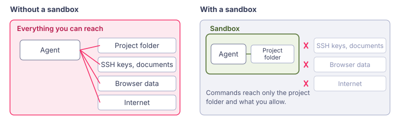
Co zmienia sandbox: polecenia sięgają tylko do folderu projektu i tego, na co pozwolisz.
0.0.0.0 jest osiągalny z każdego urządzenia w twojej sieci.Wszystko, co AI Agents Map rozumie o agencie lub dostawcy LLM, to adapter: jak go znaleźć i zainstalować, jego sesje, ustawienia bezpieczeństwa, serwery MCP i skille. W AI Agents Map każdy adapter jest dodatkiem: pakiety przynoszą wszystkie, podpisane i wyłączone, a ty włączasz te, których używasz. Dodatki przynoszą też nowych agentów, nowych dostawców i funkcje wykraczające poza liczby, jak Insights (tematy sesji i podsumowanie od Claude). Wtyczka AI Agents Map ma adaptery wbudowane i nie ma dodatków.
Nowy AI Agents Map otwiera się na swojej stronie powitalnej. Każdy agent i lokalny LLM, którego AI Agents Map zna, to karta z własną ikoną, w trzech grupach: Agenci AI, Lokalne LLM i Dostawcy online (nazwy Anthropic, OpenAI i pozostałych na mapie). Każda karta mówi, czy program tu jest:
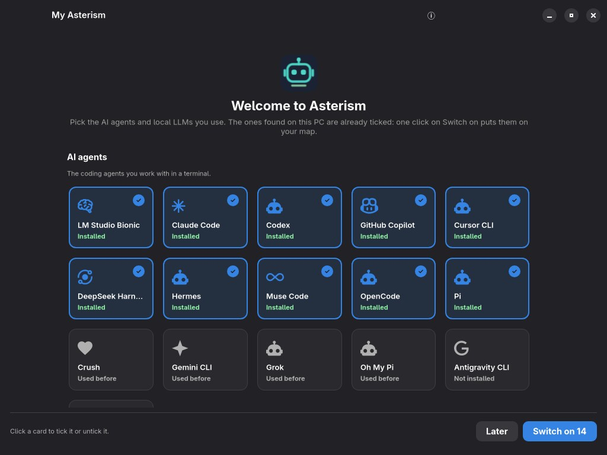
Strona powitalna: znalezione programy są na początku i są zaznaczone.
Kliknij kartę (lub naciśnij na niej Spację), aby ją zaznaczyć lub odznaczyć; zaznaczona karta ma niebieską ramkę i haczyk. Włącz (z liczbą zaznaczonych kart) ładuje je i pokazuje mapę; jeśli zaznaczyłeś programy, które nie są zainstalowane, otwiera się Konfiguracja: ⋯ na ich kartach › Zainstaluj…. Później zaczyna z pustą mapą. Dopóki nic nie jest włączone, AI Agents Map przy każdym starcie otwiera się ponownie na stronie powitalnej. Potem te same karty są w Konfiguracji (przycisk w nagłówku), gdzie agentów i dostawców włącza się i wyłącza w dowolnym momencie.
Przy każdym kolejnym starcie AI Agents Map znów sprawdza, co jest zainstalowane, i sama włącza dodatek każdego znalezionego agenta, lokalnego LLM i dostawcy online, aby wszystkie były na mapie. Dodatek, który sam wyłączyłeś (tutaj, na stronie dodatków lub nie zaznaczony na stronie powitalnej), pozostaje wyłączony; włącz go ponownie, aby go odzyskać.
Otwórz ją przyciskiem z puzzlem w nagłówku, przez Ustawienia › Dodatki lub z dowolnej wskazówki „dostępny dodatek”. Pokazuje, w zwijanych kartach grup, które zaczynają otwarte:
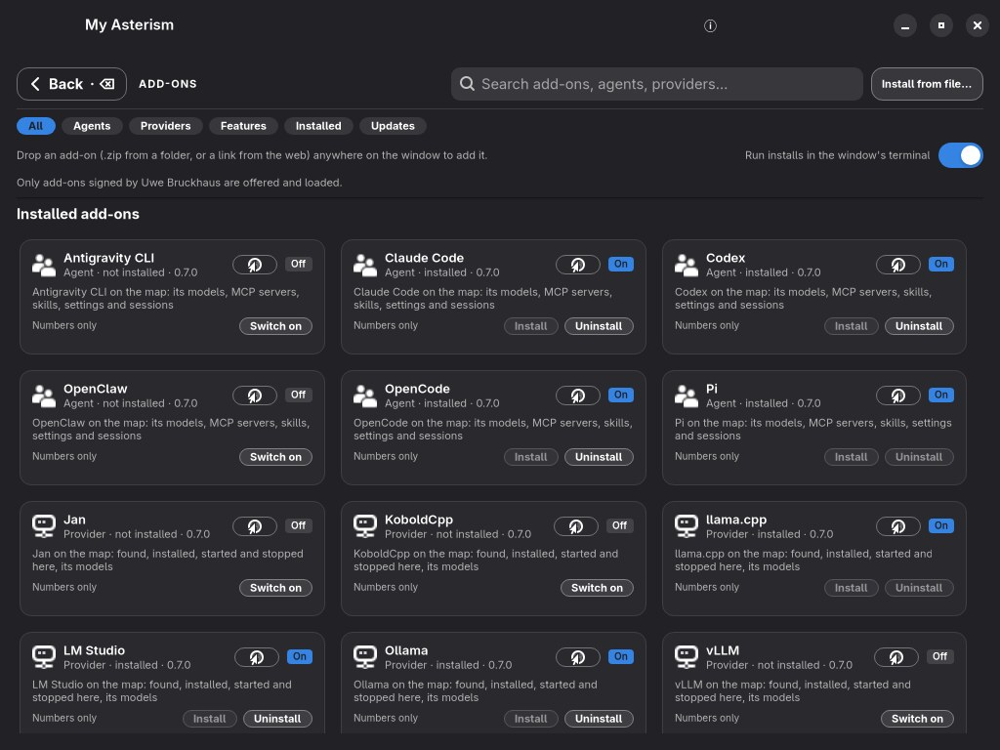
Zainstalowane dodatki: włączone lub wyłączone, z Zainstaluj i Odinstaluj dla programu.
Karta włączonego agenta lub lokalnego LLM ma Zainstaluj i Odinstaluj dla samego programu (to, co nie ma zastosowania, jest wyszarzone), a każda karta ze stroną domową ma przycisk z globusem, który otwiera ją w przeglądarce.
Wyszukiwanie znajduje nazwy, opisy i to, co dodatek czyta; filtry powyżej zawężają listę do agentów, dostawców, funkcji, zainstalowanych lub tych z aktualizacją. Kliknij kartę, aby zobaczyć szczegóły: co czyta, co wysyła, co może robić i jego poziom prywatności.
Zainstaluj (lub Pobierz dodatek) najpierw pokazuje, co dodatek czyta, wysyła i może robić; dopiero po twoim OK jest pobierany, sprawdzany i włączany. Wyłącz i Włącz działają od razu, bez restartu: jego agenci, dostawcy, sekcje i karty pojawiają się lub znikają wszędzie. Aktualizuj zastępuje go nowszą wersją z katalogu po sprawdzeniu nowej; Usuń przenosi go do kosza. Zainstaluj z pliku… przyjmuje zip z dodatkiem pobrany przez ciebie; obowiązują te same kontrole.
Gdy katalog ma nowsze wersje zainstalowanych dodatków, karty w Konfiguracji pokazują Aktualizacja dodatku, stan kolumny wymienia Aktualizacje dodatków gotowe z przyciskami Zaktualizuj wszystko i Dodatki, a strona dodatków pokazuje pasek z Zaktualizuj wszystko. Menu ⋯ karty (lub kliknięcie jej prawym przyciskiem) ma też Zaktualizuj dodatek do wersja, dla tego jednego dodatku. Zaktualizuj wszystko aktualizuje je po kolei, z tymi samymi kontrolami, i jednym komunikatem mówi, które zaktualizowano. Naraz działa tylko jedna instalacja lub aktualizacja; inna uruchomiona w tym czasie prosi o ponowną próbę za chwilę.
Tylko od autora. AI Agents Map ładuje tylko dodatki podpisane przez Uwe Bruckhausa (odcisk klucza
SHA256:e5cC634Ke3Our5LAeSc88qs22NKZEHTncBW5Ig3amWQ). Zanim cokolwiek z dodatku zostanie uruchomione, podpis
jest sprawdzany narzędziem ssh-keygen z OpenSSH, każdy plik jest porównywany z jego sumą SHA-256 i żaden
plik nie może zostać dodany. Pobrany plik musi ponadto pasować do sumy SHA-256 w podpisanym katalogu.
| Poziom | Co dodatek może czytać lub wysyłać |
|---|---|
| Tylko liczby | Liczniki, czasy, tokeny, zmienione wiersze, koszt — to, co AI Agents Map pokazuje bez dodatków. |
| Tytuły sesji | Tytuły, które agent sam nadał swoim sesjom (nigdy rozmowy). |
| Tytuły i podsumowanie od Claude | Te tytuły i liczby, wysłane do twojego własnego Claude Code — tylko po kliknięciu, po podglądzie tego, co dokładnie zostanie wysłane. |
Dodatek nigdy nie może zrobić więcej, niż pozwala jego poziom. Dodanie agenta lub dostawcy albo instalacja programu to osobne uprawnienia, które wymienia jego karta.
| Rodzaj | Co przynosi |
|---|---|
| Agent | Agenta programistycznego: gdzie trzyma ustawienia, sesje, serwery MCP i skille, jak się go instaluje i jak się loguje. Wszystko inne AI Agents Map buduje z tego — kartę w Konfiguracji, jego pole na mapie, Użycie i tokeny, Projekty, Stan i Bezpieczeństwo. |
| Dostawca | Lokalny program LLM lub dostawców online: jak go znaleźć i zainstalować i jak agenci się z nim łączą. AI Agents Map buduje jego kartę, pole na mapie i stronę szczegółów — w tym Użycie i tokeny: co twoi agenci przez niego wysłali, z ich własnych liczb sesji. |
| Rozszerzenie | Więcej informacji o agencie lub dostawcy, którego przynosi inny dodatek, bez zastępowania go — na przykład jego plan i limity albo karta na jego stronie szczegółów. Wypełnia tylko to, co dodatek agenta zostawia puste; strona dodatku mówi, co dodaje i co z tego nie jest używane. |
| Funkcja | Coś obejmującego wielu agentów, jak Insights (karta Tematy). |
Sekcja dodatku na stronie szczegółów agenta lub lokalnego LLM trafia do karty, której dotyczy: Użycie i tokeny, Stan, Tematy (tylko u agentów) lub własna karta z jego nazwą.
Dodatek agenta opisuje swojego agenta jako dane (plik o nazwie agent.toml); większość
nie przynosi żadnego kodu, a strona dodatku to mówi: Nie przynosi kodu albo, dla nielicznych agentów,
które czegoś potrzebują (na przykład własnej bazy sesji), Dane o agencie i trochę kodu na to, czego dane
nie potrafią powiedzieć.
Gdy instalujesz agenta, którego AI Agents Map jeszcze nie zna, zagląda do katalogu (Ustawienia › Szukaj dodatków online, domyślnie włączone: lista jest czytana z GitHuba co kilka godzin i wysyłane jest tylko zapytanie). Jeśli jakiś dodatek zna tego agenta, mówi o tym stan kolumny („Kilo Code jest na tym komputerze, ale nie na mapie”), a karta pojawia się w Proponowane dla tego komputera; kliknięcie go instaluje. Jeśli dodatku jeszcze nie ma, mówią o tym szczegóły agenta, z linkiem, aby o niego poprosić.
Nowy lokalny LLM albo nowy agent potrzebuje tylko dodatku: AI Agents Map buduje jego kartę, jego pole i linie
na mapie, jego szczegóły, stronę Modele i stronę Bezpieczeństwo z tego, co mówi o nim dodatek. Jeśli
trochę programujesz, zacznij od szablonów w repozytorium AI Agents Map (templates/, opisanych w
docs/addons.md): jeden plik dla lokalnego LLM, plik z faktami dla agenta. Wyślij dodatek do
github.com/uBruckhaus/asterism-addons; po sprawdzeniu i podpisaniu pojawi się dla wszystkich
w sekcji Dostępne.
sudo w terminalu, który widzisz, po pokazaniu ci polecenia.README w każdym repozytorium wymienia w całości, co jest czytane, uruchamiane i zapisywane.
| Problem | Co zrobić |
|---|---|
| Mapa jest ściśnięta lub ucięta. | Do 55 % ekranu (poniżej 1150 pikseli) mapa pokazuje kolumny Agenci i Dostawcy; do 80 % (poniżej 1600 pikseli) dodaje Modele; poszerz okno lub włącz więcej kolumn przyciskami nad mapą albo użyj Dopasuj do okna (Ctrl+0). |
| Na mapie nie ma pola, którego się spodziewam. | Mapa pokazuje tylko to, co jest skonfigurowane: zajrzyj do Konfiguracji (wyłączony dodatek, serwer MCP, którego nie używa żaden agent) i do przycisków filtrów kolumn nad mapą. |
| Brak Uruchom tutaj albo nic nie robi. | Zainstaluj VTE dla GTK 4 (vte4) albo użyj Uruchom w terminalu. |
| Linia jest czerwona przerywana. | Kliknij ją, aby zobaczyć wskazówki, napraw to, co mówią, potem Testuj ponownie. Zob. Gdy połączenie się nie uda. |
| Lokalny LLM nie startuje z agentem. | Sprawdź Ustawienia › Uruchamiaj lokalne LLM razem z agentami i czy agent jest połączony na mapie. systemctl --user status ai-agents-map-providers pokazuje strażnika. |
| Kolorowe światło od lokalnego LLM do jego modelu się nie pojawia. | Pojawia się tylko wtedy, gdy program spoza mapy generuje z tym LLM, i gaśnie około dziesięciu sekund po jego ostatnim zapytaniu. Sprawdź, czy mapa jest widoczna (szerokie okno) i czy program naprawdę coś wysyła. |
| Agent odpowiada słabo lub przerywa z lokalnym modelem. | Kontekst może być za mały. Otwórz model w Modele… › Zainstalowane i użyj Ustaw kontekst z najlepszą wartością dla twojej karty. |
| Pobieranie się zatrzymało. | Po zerwaniu połączenia wznawia się samo. Po restarcie użyj Wznów w pasku u góry. |
| Chcę cofnąć wcześniejszą zmianę. | Kopie zapasowe są w ~/.local/state/ai-agents-map/backups/. |
| F1 | Pomoc |
|---|---|
| F12 | F12 zapisuje zrzut ekranu. Obraz okna trafia do ~/Pictures/AI Agents Map, domyślnie włączone. W terminalu użyj symbolu aparatu pod nim. Możesz dodać notatkę, zapisaną jako plik tekstowy obok obrazu. W ustawieniach możesz wybrać inny folder. Liczy się tylko sam F12 (nie z Ctrl, Shift, Alt ani Super). Tylko ty możesz otworzyć folder (0700) i jego pliki (0600); istniejący obraz ani notatka nigdy nie są nadpisywane i nic nie jest wysyłane. |
| Ctrl+, | Ustawienia |
| F5 | Odśwież (mapę i Konfigurację) |
| Ctrl++ / Ctrl+− / Ctrl+0 | Powiększ mapę, pomniejsz, dopasuj z powrotem do szerokości okna |
| Kółko myszy | Przewijanie mapy |
| Shift+klik | Dodaj do zaznaczenia lub usuń z niego |
| Esc | Wyczyść zaznaczenie; wróć ze strony |
| Backspace | Wróć ze strony |
| Ścieżka | Zawartość |
|---|---|
~/.config/omarchy/ai-agents-map/ | Ustawienia, lista serwerów MCP, sprawdzeni agenci, nieudane połączenia. |
~/.local/state/ai-agents-map/backups/ | Kopie zapasowe każdego pliku zmienionego przez aplikację. |
~/.local/state/ai-agents-map/jobs.json | Przerwane pobierania i instalacje. |
~/.local/state/ai-agents-map/reorganize.json | Dziennik ostatnich porządków, dla Cofnij. |
~/.cache/ai-agents-map/ | Wyniki wyszukiwania, listy narzędzi, sprawdzenia aktualizacji, ostatni Smart Check (smart-check.json) i aktualizacje MCP z kontroli AI (mcp-updates.json). |
~/.local/state/ai-agents-map/ai-help/ | Protokół: jeden plik na każde uruchomienie pomocy AI (ostatnie 200). |
~/.local/state/omarchy-plugin-ai/runs.json | Wyszukiwania i zadania AI tej aplikacji i innych wtyczek, z ich tokenami: statystyki Smart Check. |
~/.config/systemd/user/ai-agents-map-providers.service | Strażnik, który uruchamia lokalne LLM razem z ich agentami. |